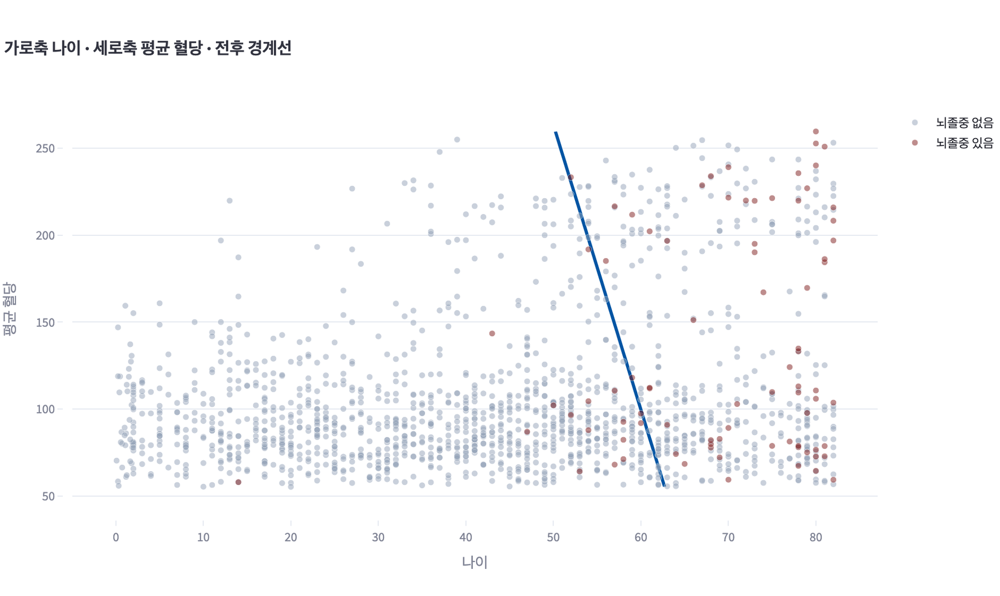

분류 평가 · 정확도를 믿으면 안 되는구나
열 명이 하는 판에 마피아는 세 명입니다.
- ① 게임 내내 ‘다 시민이야’라고만 하는 친구
- ② ‘쟤 마피아 같아’를 계속 하는 친구 — 여섯 명을 지목해 둘을 맞혔습니다
- ③ 조용히 있다가 딱 한 번 지목 — 그 한 명이 진짜 마피아였습니다
①은 아무도 지목하지 않았는데 열 번 가운데 일곱 번이 맞습니다. 마피아가 세 명이니 나머지 일곱 명은 정말 시민이기 때문입니다. 마피아가 두 명인 판이면 여덟 번, 한 명인 판이면 아홉 번입니다. 그러나 ①이 잡아낸 마피아는 한 명도 없습니다.
②는 마피아를 둘 잡았지만 네 번 헛짚어 맞힌 비율이 5/10으로 셋 가운데 가장 낮습니다. ③은 한 번도 틀리지 않아 8/10이지만 마피아 둘을 놓쳤습니다. 맞힌 비율 하나로는 세 사람 가운데 누가 나은지 말할 수 없습니다.
지난 시간에 비교한 세 모델은 모두 높은 정확도를 보였습니다. 하지만 무엇을 맞히고 무엇을 놓쳤는지는 아직 확인하지 않았습니다. 이번에는 예측 결과를 네 칸으로 나누고, 정확도·재현율·정밀도·F1을 직접 계산해 앱의 결과와 비교합니다.
- 문제 1. 어떤 코로나 검사 방법의 정확도가 99.7%입니다. 믿고 사용해도 되겠습니까.
이 방법은 검사를 하지 않고 모두 음성이라고 답하기입니다. 수도권 임시선별검사소에서 2020년 12월부터 2021년 7월까지 약 800만 건을 검사했고, 그 가운데 확진은 약 2만 5천 명이었습니다. 모두 음성이라고 답하면 틀리는 것은 그 2만 5천 명뿐입니다. 800만 − 2만 5천 = 797만 5천이므로 정확도는 약 99.7%입니다.
- 문제 2. 감염자 다섯 명 가운데 한 명만 찾아내는 자가검사키트로 같은 800만 명을 검사하면 정확도는 얼마입니까. 감염되지 않은 사람을 감염이라고 잘못 말하는 일은 없다고 봅니다.
틀리는 것은 놓친 감염자 약 2만 명뿐입니다. 800만 − 2만 = 798만이므로 정확도는 약 99.75%입니다. 검사를 하지 않았을 때와 0.06%p 차이입니다.
- 문제 3. 정확도가 거의 같은 두 방법에서 실제로 달라진 것은 무엇입니까.
검사를 하지 않으면 0명이고, 자가검사키트는 약 5천 명을 찾아냅니다. 허가 기준대로 감염자의 90%를 찾아내는 검사라면 약 2만 2천 명을 찾아내고 정확도는 99.97%입니다. 세 방법의 정확도는 99.69%, 99.75%, 99.97%로 거의 같지만 찾아낸 감염자는 0명, 5천 명, 2만 2천 명입니다. 정확도는 이 셋을 구별하지 못합니다.
위암 검진에서도 같은 일이 있습니다 — 96.1% 대 99.93%
| 위암을 찾는 방법 | 정확도 |
|---|---|
| 위장조영검사 | 96.1% |
| 검사하지 않고 모두 정상이라고 답하기 | 99.93% |
이 표에서는 검사하지 않고 모두 정상이라고 답하는 방법의 정확도가 더 높게 나타납니다. 하지만 이 방법으로는 위암 환자를 한 명도 찾아낼 수 없습니다. 정확도가 높다는 이유만으로 더 나은 검사라고 판단할 수는 없습니다.
출처: 주간 건강과 질병 2021;14(48) · 대한진단검사의학회(경향신문 2022-02-17) · 서울대병원 JKMS 2021 · Choi 외 인구기반 연구(2002~2005 국가암검진)
지난 시간의 95% 안팎 정확도도 마찬가지입니다. 그 95%가 무엇을 맞힌 결과인지 오늘 확인합니다.
지난 시간에 만든 두 모델을 여러 지표로 평가합니다. 검진센터에서 어떤 오류를 줄여야 하는지 생각하며 결과를 해석합니다.
예측 오류는 두 가지입니다. 뇌졸중을 겪은 사람을 놓치는 경우와 겪지 않은 사람을 뇌졸중이라고 예측하는 경우입니다. 두 오류가 미치는 영향이 다르므로, 평가할 때 중요하게 볼 지표도 달라집니다.
평가 결과를 설명할 때는 정확도뿐 아니라 어떤 오류를 줄이려는지와 그 이유를 함께 제시합니다.
분석에 사용하는 건강 기록은 출처가 공개되지 않은 교육용 공개 데이터이며, 여기서 얻은 결과를 실제 의학적 판단에 사용하지 않습니다.
0. 오늘의 목표
정확도만으로는 어떤 예측이 맞았고 어떤 예측이 틀렸는지 구분하기 어렵습니다. 이번에는 실제 범주와 예측 범주를 교차해 결과를 네 칸으로 나누고, 각 칸의 인원으로 평가 지표를 계산합니다.
- 실제 범주와 예측 범주를 혼동행렬의 네 칸(TP·FP·FN·TN)으로 나누어 채울 수 있다.
- 네 칸에서 정확도·재현율·정밀도·F1을 손으로 계산하고, 각 지표의 분모가 다른 이유를 설명할 수 있다.
- 드문 범주의 가중치를 조정한 전과 후를 비교하고, 평가 지표와 오류 유형별 인원이 어떻게 달라졌는지 설명할 수 있다.
- 어느 오류의 대가가 더 큰지를 근거로 볼 지표를 정하고, 그 모델을 사용해도 되는지 판단할 수 있다.
1. 정확도의 한계
뇌졸중을 한 명도 찾아내지 않고 정확도 95%를 넘길 수 있을까요?
할 수 있습니다. 5,110명 가운데 뇌졸중을 겪은 사람은 249명, 4.87%뿐입니다. 모두에게 ‘아닙니다’라고 답해도 95.13%를 맞힙니다. 뇌졸중이 아닌 4,861명을 모두 맞혔기 때문입니다. 4,861 ÷ 5,110 = 0.9513입니다. 환자는 한 명도 찾지 못했는데 정확도는 높습니다.
지난 시간에 비교한 기준 모델도 같은 방식입니다. 입력은 보지 않고 사람이 더 많은 범주로만 예측합니다. 찾아내려는 범주가 드물수록 이런 모델도 높은 정확도를 얻을 수 있습니다. 학습한 모델을 평가할 때 기준 모델과 비교해야 합니다.
모델이 무엇을 놓쳤는지 알려면 무엇을 더 봐야 할까요? 실제 뇌졸중 여부와 예측을 함께 놓고 맞힌 경우와 틀린 경우를 구분해 봅니다.
2. 혼동행렬과 평가 지표
계산식 펼치기 · 네 칸 · 정확도 · 재현율 · 정밀도 · F1
양성 = 찾으려는 쪽
| 예측 : 뇌졸중 (Positive) | 예측 : 아님 (Negative) | |
|---|---|---|
| 실제 : 뇌졸중 | TP True Positive | FN False Negative |
| 실제 : 아님 | FP False Positive | TN True Negative |
앞 글자 T·F는 그 예측이 맞았는지 틀렸는지를, 뒤 글자 P·N은 무엇이라고 예측했는지를 나타냅니다.
재현율과 정밀도는 분자가 TP로 같고 분모만 다릅니다.
재현율의 분모는 실제로 뇌졸중인 사람 수이고, 정밀도의 분모는 뇌졸중이라고 예측한 사람 수입니다.
뇌졸중이라고 예측한 사람이 0명이면 정밀도는 계산할 수 없습니다.
"오분류표란 각각의 실제 클래스와 예측 결과를 행렬로 나타낸 것이다." (139쪽)
"정확도는 전체 데이터 중 실제와 같게 예측한 데이터의 비율을 나타내며, 레이블별 분포가 균일하지 않은 경우 정확도로 모델을 평가하는 것은 부적절하다." (139쪽)
"정밀도는 모델이 양성으로 예측한 것 중 실제 양성인 데이터의 비율을 나타낸다. 재현율은 실제 양성인 데이터 중 모델이 정확하게 예측한 데이터의 비율을 나타낸다." (139쪽)
→ 혼동행렬은 실제와 예측을 교차해 만든 네 칸입니다. 오늘의 지표는 모두 여기서 계산합니다. 이 수업에서는 찾으려는 쪽인 뇌졸중을 양성으로 둡니다.
양성은 ‘좋다’는 뜻이 아닙니다. 찾아내려는 쪽을 가리키는 이름입니다. 스팸 필터라면 스팸이, 오늘 문제라면 뇌졸중이 양성입니다.
네 칸을 TP·FP·FN·TN으로 나타냅니다. 앞 글자 T/F는 예측이 맞았는지 틀렸는지를, 뒤 글자 P/N은 양성으로 예측했는지 음성으로 예측했는지를 뜻합니다. FP는 양성이라고 잘못 예측한 경우이고, FN은 음성이라고 잘못 예측해 놓친 경우입니다.
계산할 때는 기호와 뜻을 함께 확인합니다. TP는 찾아낸 환자, FN은 놓친 환자, FP는 헛짚은 사람을 나타냅니다.
| 지표 | 계산 (140쪽 공식) | 묻는 말 |
|---|---|---|
| 정확도 | (TP+TN) ÷ 전체 | 전체 가운데 맞힌 비율은? |
| 재현율 | TP ÷ (TP+FN) | 실제 환자 가운데 찾아낸 비율은? |
| 정밀도 | TP ÷ (TP+FP) | 환자라고 답한 사람 가운데 진짜 환자인 비율은? |
| F1 | 2 × 정밀도 × 재현율 ÷ (정밀도 + 재현율) | 재현율과 정밀도의 균형 |
정밀도와 재현율이 서로 다른 방향을 가리킬 때 둘을 한 값으로 묶어 보는 것이 F1입니다. F1은 정밀도와 재현율 중 낮은 쪽에 더 크게 영향을 받습니다. 재현율과 정밀도 가운데 한쪽이 0이고 다른 쪽이 0보다 크면 F1은 0입니다. 정밀도나 재현율을 계산할 수 없거나 둘 다 0이면 F1은 정의되지 않습니다.
F1 식은 교과서 139쪽에 있습니다.
활동지 — 혼동행렬과 평가 지표 계산하기
기본 문제에서는 20명의 검진 결과를 바탕으로 세 규칙을 평가합니다. 실제로 뇌졸중을 겪은 분은 4명, 겪지 않은 분은 16명입니다. 연습 문제에서는 같은 계산 과정을 스팸 필터에 적용합니다. 계산기 없이 풀 수 있도록 수를 단순하게 제시했습니다.
- 먼저 활동지에 손으로 계산합니다. 계산을 마친 뒤 선생님 화면의 위젯으로 결과를 함께 확인합니다.
- 계산 과정을 남깁니다. 각 지표의 분자와 분모를 적어 두어야 결과가 다를 때 어느 단계에서 어긋났는지 확인할 수 있습니다.
- 값이 다르면 혼동행렬부터 확인합니다. 활동지 ① 네 칸의 인원이 맞는지, ③ 재현율과 정밀도의 분모를 바꾸어 쓰지 않았는지 점검합니다.
| 단계 | 활동지에 적는 것 | 확인할 점 |
|---|---|---|
| ① 혼동행렬 | 주어진 네 칸을 읽고 비어 있는 행·열 합계를 채웁니다 | 행의 합은 실제 인원, 열의 합은 예측 인원입니다. 두 합이 모두 맞아야 다음으로 넘어갑니다. |
| ② 정확도 | (TP + TN) ÷ 20 | 맞힌 두 칸을 하나로 묶은 값입니다. |
| ③ 재현율 · 정밀도 | TP ÷ (TP + FN)과 TP ÷ (TP + FP) | 분자는 같고 분모가 다릅니다. 재현율은 실제가 기준, 정밀도는 예측이 기준입니다. |
| ④ F1 | 2 × 정밀도 × 재현율 ÷ (정밀도 + 재현율) | ③에서 구한 두 값으로 계산합니다. 두 문제 모두 같은 수로 나누게 되어 있습니다. |
| ⑤ 판단 | 볼 지표와 고를 모델, 그리고 그렇게 정한 이유 | ①~④에서 구한 값을 보고 판단하는 단계입니다. 네 지표가 같은 모델을 가리키는지부터 확인합니다. |
규칙 C는 모두에게 ‘아님’이라고 답하는 기준 모델입니다. 모델 A와 정확도는 같지만 재현율·정밀도·F1은 다릅니다. 규칙 C에서는 정밀도가 정의되지 않습니다. 정확도가 같아도 두 방법을 다르게 평가해야 하는 이유를 활동지 ⑤에 적습니다.
계산을 마치면 위젯의 결과와 대조합니다. 값이 다를 때는 혼동행렬의 인원 → 지표의 분모 → 계산 과정 순서로 확인합니다.
3. 어느 오류를 줄일 것인가
재현율과 정밀도는 분모가 다릅니다. 따라서 어느 쪽을 먼저 볼지는 상황에 따라 정해집니다. 학교에서 겪을 만한 두 가지 상황으로 연습해 보겠습니다. 두 상황 모두 앞서 본 모델 A·B와 같은 인원 구성을 사용합니다. 같은 관측 결과를 뜻하는 것이 아니라, 분모만 바꾸어 읽는 연습입니다.
함께 판단하기 — 체육대회에서 도움이 필요한 사람 찾기
체육대회 날 운동장에 사람이 많습니다. 오래 뛰고 난 뒤 더위에 지치거나 다쳐서 도움이 필요한 사람이 생길 수 있습니다. 한 팀이 운동장을 돌며 도움이 필요해 보이는 사람을 보건 선생님께 알립니다.
알림은 누군가를 판정하는 신호가 아닙니다. 선생님이 직접 가서 확인하는 신호입니다. 이번에는 도움이 필요한 사람을 놓치는 일을 먼저 줄이기로 합니다.
그렇다면 무엇부터 모아야 할까요? 놓치는 일을 줄이려면 실제로 도움이 필요했던 사람을 먼저 모으고, 그중 몇 명을 찾아냈는지 셉니다. 분모가 실제이므로 재현율입니다.
| 실제로 도움이 필요했던 사람 4명 | 규칙 A | 규칙 B |
|---|---|---|
| 찾아낸 사람 | 3명 | 1명 |
| 놓친 사람 | 1명 | 3명 |
| 도움이 필요 없는데 알린 사람 | 3명 | 0명 |
| 재현율 | 3 ÷ 4 = 0.75 | 1 ÷ 4 = 0.25 |
이번 목적에서는 A를 고릅니다. 다만 A는 도움이 필요하지 않은 세 사람에게도 알림이 갔습니다. 재현율을 먼저 본다고 해서 FP(잘못 알림)를 무시하지는 않습니다.
스스로 판단하기 — 급식 줄 새치기 지목
이번에는 급식 줄에서 새치기한 사람을 고르는 규칙입니다. 줄을 제대로 섰는데 지목되면 어떨까요? 줄을 선 사람들이 모두 보는 앞에서 지목합니다. 아니라고 밝혀져도 지목당한 일은 남습니다.
그래서 이번에는 고른 사람 가운데 실제로 맞은 비율을 먼저 봅니다. 분모가 예측이므로 정밀도입니다.
| 실제 새치기 4건 | 규칙 A | 규칙 B |
|---|---|---|
| 새치기라고 고른 건수 | 6건 | 1건 |
| 그중 실제 새치기 | 3건 | 1건 |
| 잘못 지목한 건수 | 3건 | 0건 |
| 놓친 새치기 | 1건 | 3건 |
| 정밀도 | 3 ÷ 6 = 0.50 | 1 ÷ 1 = 1.00 |
이번 목적에서는 B를 고를 수 있습니다. 다만 B는 실제 새치기 세 건을 놓쳤고, 정밀도 1.00도 한 건만 지목해서 나온 값입니다.
잘못 지목한 건수는 0이 됩니다. 그런데 실제 새치기도 한 건 찾지 못합니다. 2절에서 본 규칙 C가 바로 그런 규칙입니다. 그래서 정밀도만 보지 않고 놓친 건수도 함께 적습니다.
두 상황에서 한 일은 같습니다. 무엇을 줄일지 정하고, 그것을 분모로 세우고, 그 분모를 쓰는 지표를 고릅니다. 이제 우리 모델에도 같은 판단을 적용해 보겠습니다.
4. 내 모델 평가하기
활동지에서 익힌 계산을 지난 시간의 테스트 데이터에 적용합니다. 데이터의 크기는 달라져도 혼동행렬을 만들고 평가 지표를 계산하는 방법은 같습니다.
오늘은 앱을 만들지 않습니다. 아래 주소를 열면 ‘채점표’, ‘성능 높이기’, ‘모델 소개’ 페이지가 이미 들어 있는 앱이 바로 뜹니다. 설치할 것은 없습니다.
처음 열 때 30초에서 1분쯤 걸립니다. 수업 시작 전에 미리 한 번 열어 두세요. 직접 만들어 보고 싶으면 아래 절마다 있는 ① 샘플 프롬프트를 그대로 사용하면 됩니다. 팀 프로젝트에서 이 흐름을 다시 쓰게 됩니다.
지난 시간 앱이 없는 경우 — 11차시 완성본 네 파일
직접 만들어 볼 학생 가운데 지난 시간 앱이 없거나 화면이 다른 경우, 아래 네 파일을 그대로 붙여 넣고 시작합니다. 여기에 페이지를 세 개 더합니다.
# main.py — 뇌졸중 예측 실습실: 이 데이터가 무엇인지 소개하는 첫 화면
import pandas as pd
import streamlit as st
st.set_page_config(page_title="뇌졸중 예측 실습실", page_icon="🩺", layout="wide")
st.title("🩺 뇌졸중 예측 실습실")
st.write("건강 기록 5,110명분을 읽어 옵니다. 왼쪽 메뉴에서 페이지를 넘기며 들여다보고, 모델을 만들고, 채점합니다.")
데이터주소 = "https://raw.githubusercontent.com/greatsong/modudata/main/data/stroke.csv"
@st.cache_data
def 데이터_읽기():
"""UTF-8로 저장된 csv를 읽는다. bmi 열의 빈 값은 그대로 빈 값으로 남는다."""
return pd.read_csv(데이터주소, encoding="utf-8")
df = 데이터_읽기()
st.subheader("한눈에 보기")
칸1, 칸2, 칸3, 칸4 = st.columns(4)
칸1.metric("전체 사람 수", f"{len(df):,}명")
칸2.metric("열 개수", f"{df.shape[1]}개")
칸3.metric("뇌졸중을 겪은 사람", f"{int(df['stroke'].sum()):,}명")
칸4.metric("그 비율", f"{df['stroke'].mean() * 100:.2f}%")
st.subheader("열마다 무엇이 들어 있는가")
st.caption("우리말 뜻 칸은 비어 있습니다. 교재의 열 대응표를 보고 직접 채워 넣으세요. 적은 내용은 저장되지 않습니다.")
def 값의_종류(열):
"""숫자 열은 가장 작은 값과 가장 큰 값을, 글자 열은 값의 가짓수와 실제 값을 적는다."""
칸 = df[열].dropna()
if pd.api.types.is_numeric_dtype(칸) and 칸.nunique() > 2:
return f"숫자 {칸.min():g} ~ {칸.max():g}"
값들 = sorted(칸.unique().astype(str))
return f"{len(값들)}가지 · " + " · ".join(값들)
열설명 = pd.DataFrame({
"열 이름": df.columns,
"우리말 뜻": [""] * df.shape[1],
"값의 종류": [값의_종류(열) for 열 in df.columns],
"빈 값 개수": [int(df[열].isna().sum()) for 열 in df.columns],
})
st.data_editor(
열설명,
width="stretch",
hide_index=True,
disabled=["열 이름", "값의 종류", "빈 값 개수"], # 우리말 뜻 칸만 고쳐 쓸 수 있다
key="열설명표",
)
st.subheader("앞 다섯 줄 그대로 보기")
st.dataframe(df.head(5), width="stretch", hide_index=True)
st.subheader("이 데이터는 어디서 왔는가")
출처_기본값 = """출처: 캐글 Stroke Prediction Dataset (게시자 fedesoriano, 2021-01-26 공개)
원본 주소: https://www.kaggle.com/datasets/fedesoriano/stroke-prediction-dataset
라이선스: Data files © Original Authors
게시자가 적은 문구: (Confidential Source) - Use only for educational purposes
이 수업에서는 교육 목적으로만 사용합니다."""
st.text_area("교재를 보고 여기에 적습니다", value=출처_기본값, height=170, key="출처")
st.caption("이 데이터를 올린 사람은 원본 데이터가 어디서 왔는지 밝히지 않았고, 교육 목적으로만 사용하라고 적어 두었습니다. "
"이름이나 생년월일이 없어 실제 환자를 찾아낼 수는 없지만, 출처를 알 수 없는 데이터로 얻은 결과를 "
"실제 의학적 판단에 사용해서는 안 됩니다.")streamlit pandas plotly scikit-learn
# pages/1_탐색.py — 나이·혈당의 분포, 두 그룹 비교, 고혈압·심장병별 비율, 빈 값 살펴보기
import pandas as pd
import plotly.express as px
import streamlit as st
st.set_page_config(page_title="탐색", page_icon="🔍", layout="wide")
st.title("🔍 탐색")
st.write("모델을 만들기 전에 데이터를 들여다봅니다. 화면의 값을 교재의 빈 표에 적으세요.")
데이터주소 = "https://raw.githubusercontent.com/greatsong/modudata/main/data/stroke.csv"
@st.cache_data
def 데이터_읽기():
return pd.read_csv(데이터주소, encoding="utf-8")
df = 데이터_읽기()
df["뇌졸중"] = df["stroke"].map({1: "뇌졸중 있음", 0: "뇌졸중 없음"})
st.subheader("1. 나이와 평균 혈당은 어떻게 퍼져 있는가")
왼쪽, 오른쪽 = st.columns(2)
with 왼쪽:
st.plotly_chart(px.histogram(df, x="age", nbins=40, title="나이 분포",
labels={"age": "나이", "count": "사람 수"}), width="stretch")
with 오른쪽:
st.plotly_chart(px.histogram(df, x="avg_glucose_level", nbins=40, title="평균 혈당 분포",
labels={"avg_glucose_level": "평균 혈당", "count": "사람 수"}), width="stretch")
st.subheader("2. 뇌졸중을 겪은 사람과 겪지 않은 사람은 무엇이 다른가")
왼쪽, 오른쪽 = st.columns(2)
with 왼쪽:
st.plotly_chart(px.box(df, x="뇌졸중", y="age", color="뇌졸중", title="나이 비교",
labels={"age": "나이"}), width="stretch")
with 오른쪽:
st.plotly_chart(px.box(df, x="뇌졸중", y="avg_glucose_level", color="뇌졸중", title="평균 혈당 비교",
labels={"avg_glucose_level": "평균 혈당"}), width="stretch")
두그룹 = df.groupby("뇌졸중").agg(
평균_나이=("age", "mean"),
평균_혈당=("avg_glucose_level", "mean"),
고혈압_비율=("hypertension", "mean"),
심장병_비율=("heart_disease", "mean"),
사람_수=("id", "size"),
).reset_index()
두그룹["평균_나이"] = 두그룹["평균_나이"].round(1)
두그룹["평균_혈당"] = 두그룹["평균_혈당"].round(1)
두그룹["고혈압_비율"] = (두그룹["고혈압_비율"] * 100).round(1).astype(str) + "%"
두그룹["심장병_비율"] = (두그룹["심장병_비율"] * 100).round(1).astype(str) + "%"
st.dataframe(두그룹, width="stretch", hide_index=True)
st.subheader("3. 고혈압과 심장병이 있으면 뇌졸중 비율이 다른가")
def 비율표(열, 이름):
"""0과 1로 적힌 열마다 뇌졸중 비율을 구한다."""
표 = df.groupby(열)["stroke"].mean().reset_index()
표[열] = 표[열].map({1: f"{이름} 있음", 0: f"{이름} 없음"})
표["뇌졸중 비율(%)"] = (표["stroke"] * 100).round(2)
return 표.rename(columns={열: "구분"})[["구분", "뇌졸중 비율(%)"]]
왼쪽, 오른쪽 = st.columns(2)
with 왼쪽:
st.plotly_chart(px.bar(비율표("hypertension", "고혈압"), x="구분", y="뇌졸중 비율(%)",
title="고혈압 여부별 뇌졸중 비율", text="뇌졸중 비율(%)"), width="stretch")
with 오른쪽:
st.plotly_chart(px.bar(비율표("heart_disease", "심장병"), x="구분", y="뇌졸중 비율(%)",
title="심장병 여부별 뇌졸중 비율", text="뇌졸중 비율(%)"), width="stretch")
st.subheader("4. 체질량지수가 비어 있는 사람들은 누구인가")
빈사람 = df[df["bmi"].isna()]
빈값표 = pd.DataFrame({
"구분": ["체질량지수가 비어 있는 사람", "전체"],
"사람 수": [len(빈사람), len(df)],
"그중 뇌졸중": [int(빈사람["stroke"].sum()), int(df["stroke"].sum())],
"뇌졸중 비율(%)": [round(빈사람["stroke"].mean() * 100, 2), round(df["stroke"].mean() * 100, 2)],
})
st.dataframe(빈값표, width="stretch", hide_index=True)
st.caption("비어 있다는 것도 데이터입니다. 이 사람들을 어떻게 할지는 다음 시간에 정합니다.")
st.subheader("5. 흡연 상태에는 어떤 값이 적혀 있는가")
흡연 = df["smoking_status"].value_counts().reset_index()
흡연.columns = ["흡연 상태", "사람 수"]
흡연["비율(%)"] = (흡연["사람 수"] / len(df) * 100).round(1)
st.dataframe(흡연, width="stretch", hide_index=True)# pages/2_분류_모델.py — 속성을 골라 두 모델을 학습하고, 두 축으로 자른 자리를 그림으로 본다
import pandas as pd
import plotly.graph_objects as go
import streamlit as st
from sklearn.linear_model import LogisticRegression
from sklearn.preprocessing import StandardScaler
from sklearn.tree import DecisionTreeClassifier
st.set_page_config(page_title="분류 모델", page_icon="🤖", layout="wide")
st.title("🤖 분류 모델")
st.write("뇌졸중을 겪었는지 아닌지를 맞히는 모델 두 개를 만들고, 훈련 데이터와 테스트 데이터에서 정확도를 봅니다.")
데이터주소 = "https://raw.githubusercontent.com/greatsong/modudata/main/data/stroke.csv"
고를수있는열 = ["age", "avg_glucose_level", "bmi", "hypertension", "heart_disease"]
기본열 = ["age", "avg_glucose_level", "hypertension", "heart_disease"]
입력이름 = {"age": "나이", "avg_glucose_level": "평균 혈당", "bmi": "체질량지수",
"hypertension": "고혈압", "heart_disease": "심장병"}
칸수 = 60
칸색 = ["#e2e8f0", "#fef3c7", "#dbeafe", "#dcfce7", "#fae8ff", "#ffe4e6", "#ede9fe", "#f8fafc"]
@st.cache_data
def 데이터_읽기():
"""번호 순으로 정렬해 둔다. 나누는 자리가 늘 같아야 점수를 비교할 수 있다."""
return pd.read_csv(데이터주소, encoding="utf-8").sort_values("id").reset_index(drop=True)
정식이름 = {"확률로 답하는 모델": "로지스틱 회귀", "질문으로 답하는 모델": "의사결정트리"}
def 병기(이름):
"""교과서의 정식 이름을 앞에 두고 교재에서 쓰는 이름을 괄호로 붙인다."""
return f"{정식이름[이름]}({이름})" if 이름 in 정식이름 else 이름
def 우리말(열):
return 입력이름[열]
df = 데이터_읽기()
고른열 = st.multiselect("입력으로 사용할 속성", 고를수있는열, default=기본열, format_func=우리말)
입력열 = [열 for 열 in 고를수있는열 if 열 in 고른열] # 고른 차례와 상관없이 늘 같은 순서로 둔다
if len(입력열) < 2:
st.warning("속성을 두 개 이상 골라 주세요. 하나만으로는 그림의 두 축을 만들 수 없습니다.")
st.stop()
테스트용 = pd.Series(df.index % 10 < 3, index=df.index) # 열 명씩 묶어 각 묶음의 앞 세 명이 테스트용
X = df[입력열].copy()
y = df["stroke"] # 1이면 뇌졸중, 0이면 아님. 뇌졸중이 양성이다
if "bmi" in 입력열 and X["bmi"].isna().any():
중앙값 = float(X.loc[~테스트용, "bmi"].median())
X["bmi"] = X["bmi"].fillna(중앙값)
st.warning(f"체질량지수가 비어 있는 사람은 훈련용의 중앙값 {중앙값:.1f}으로 채웠습니다.")
def 학습(열들):
"""고른 열로 두 모델을 학습해 돌려준다. 설정은 늘 같다."""
훈련 = X.loc[~테스트용, 열들]
크기맞추기 = StandardScaler().fit(훈련) # 크기 맞추기도 훈련용으로만 한다
확률모델 = LogisticRegression(max_iter=2000).fit(크기맞추기.transform(훈련), y[~테스트용])
# 질문으로 답하는 모델은 값의 크기에 영향받지 않으므로 크기를 맞추지 않은 값을 그대로 사용한다
질문모델 = DecisionTreeClassifier(max_depth=3, min_samples_leaf=5, random_state=0).fit(훈련, y[~테스트용])
return 크기맞추기, 확률모델, 질문모델
크기맞추기, 확률모델, 질문모델 = 학습(입력열)
많은쪽 = int(y[~테스트용].mode()[0]) # 훈련용에서 사람이 많은 범주
실제 = y[테스트용].to_numpy()
st.info(f"훈련용 {int((~테스트용).sum()):,}명(그중 뇌졸중 {int(y[~테스트용].sum()):,}명)으로 학습하고, "
f"테스트용 {int(테스트용.sum()):,}명(그중 실제 뇌졸중 {int(실제.sum()):,}명)으로 채점합니다.")
st.subheader("훈련 데이터와 테스트 데이터에서의 정확도")
훈련답 = y[~테스트용].to_numpy()
예측 = {"확률로 답하는 모델": 확률모델.predict(크기맞추기.transform(X[테스트용])),
"질문으로 답하는 모델": 질문모델.predict(X[테스트용]),
"한쪽으로만 답하는 모델": pd.Series(많은쪽, index=y[테스트용].index).to_numpy()}
훈련예측 = {"확률로 답하는 모델": 확률모델.predict(크기맞추기.transform(X[~테스트용])),
"질문으로 답하는 모델": 질문모델.predict(X[~테스트용]),
"한쪽으로만 답하는 모델": pd.Series(많은쪽, index=y[~테스트용].index).to_numpy()}
칸들 = st.columns(3)
for 칸, (이름, 예측값) in zip(칸들, 예측.items()):
칸.metric(병기(이름), f"{(예측값 == 실제).mean():.4f}")
칸.caption(f"훈련용 {(훈련예측[이름] == 훈련답).mean():.4f} · 테스트용 {(예측값 == 실제).mean():.4f}")
st.caption("큰 숫자가 테스트 데이터의 정확도입니다. 소수 넷째 자리까지 적었습니다. 맨 오른쪽은 입력을 하나도 "
"보지 않고 훈련용에서 사람이 많은 쪽으로만 답하는 모델입니다. 테스트용 세 값을 교재의 표에 적어 두세요.")
st.subheader("고른 속성 가운데 둘을 축으로 놓고 본다")
축칸 = st.columns(2)
가로 = 축칸[0].selectbox("가로축", 입력열, index=0, format_func=우리말)
세로후보 = [열 for 열 in 입력열 if 열 != 가로]
세로 = 축칸[1].selectbox("세로축", 세로후보, index=0, format_func=우리말)
채점입력 = X[테스트용]
# 두 축이 아닌 속성은 테스트 데이터의 중앙값에 세워 둔다. 위에서 채점한 그 모델을 그대로 그린다
고정값 = {열: float(채점입력[열].median()) for 열 in 입력열 if 열 not in (가로, 세로)}
def 눈금(열):
"""테스트용에서 가장 작은 값부터 가장 큰 값까지 고르게 나눈 값들을 돌려준다."""
작은값, 큰값 = float(채점입력[열].min()), float(채점입력[열].max())
큰값 = 큰값 if 큰값 > 작은값 else 작은값 + 1.0
return [작은값 + (큰값 - 작은값) * i / (칸수 - 1) for i in range(칸수)]
def 두줄로(값들): # 한 줄로 늘어선 값을 세로줄마다 잘라 표 모양으로 만든다
return [값들[i * 칸수:(i + 1) * 칸수] for i in range(칸수)]
가로눈금, 세로눈금 = 눈금(가로), 눈금(세로)
격자 = pd.DataFrame([dict(고정값, **{가로: 가, 세로: 세}) for 세 in 세로눈금 for 가 in 가로눈금])[입력열]
확률격자 = 확률모델.predict_proba(크기맞추기.transform(격자))[:, 1].tolist()
마디번호 = 질문모델.apply(격자).tolist() # 각 자리가 나무의 어느 마디에 떨어지는지
자리 = {마디: 번호 for 번호, 마디 in enumerate(sorted(set(마디번호)))}
마디수 = len(자리)
색단계 = [[(번호 + 끝) / 마디수, 칸색[번호 % len(칸색)]] for 번호 in range(마디수) for 끝 in (0, 1)]
그림 = go.Figure()
그림.add_trace(go.Heatmap(x=가로눈금, y=세로눈금, z=두줄로([자리[마디] for 마디 in 마디번호]),
colorscale=색단계, zmin=-0.5, zmax=마디수 - 0.5, opacity=0.45,
showscale=False, hoverinfo="skip"))
그림.add_trace(go.Contour(x=가로눈금, y=세로눈금, z=두줄로(확률격자),
contours=dict(coloring="lines", start=0.5, end=0.5, size=1),
line=dict(width=3, color="#2563eb"), showscale=False, hoverinfo="skip"))
점표 = pd.DataFrame({"가로": 채점입력[가로].to_numpy(), "세로": 채점입력[세로].to_numpy(),
"실제": pd.Series(실제).map({1: "뇌졸중 있음", 0: "뇌졸중 없음"}).to_numpy()})
for 이름, 색 in (("뇌졸중 없음", "#94a3b8"), ("뇌졸중 있음", "#7f1d1d")):
한그룹 = 점표[점표["실제"] == 이름]
그림.add_trace(go.Scatter(x=한그룹["가로"], y=한그룹["세로"], mode="markers", name=이름,
marker=dict(size=6, color=색, opacity=0.5)))
그림.update_layout(title=f"가로축 {우리말(가로)} · 세로축 {우리말(세로)}", xaxis_title=우리말(가로),
yaxis_title=우리말(세로), height=560)
st.plotly_chart(그림, width="stretch")
if not (min(확률격자) <= 0.5 <= max(확률격자)):
st.info(f"이 그림 안에서 확률이 가장 높은 자리도 {max(확률격자):.2f}입니다. "
f"이 그림에서는 0.5 경계선이 보이지 않습니다.")
고정설명 = " · ".join(f"{우리말(열)} {값:g}" for 열, 값 in 고정값.items())
st.caption(f"점은 테스트 데이터이고 색은 실제 뇌졸중 여부입니다. 파란 선은 {병기('확률로 답하는 모델')}이 0.5로 가르는 자리, "
f"옅은 색으로 나뉜 바탕은 {병기('질문으로 답하는 모델')}이 두 축을 나눈 칸입니다. 위에서 채점한 그 모델을 그렸습니다."
+ (f" 두 축이 아닌 속성은 테스트 데이터의 중앙값({고정설명})으로 고정해 계산했습니다." if 고정값 else ""))
st.subheader(f"{병기('질문으로 답하는 모델')}은 어떤 순서로 물었는가")
def 가지그림(모델, 열들):
"""학습한 나무를 가지가 갈라지는 그림으로 그린다.
마디마다 그 자리에 온 훈련용 사람 수와 그중 실제 뇌졸중인 사람 수를 함께 적는다.
더 묻지 않고 답을 내는 마디는 답에 따라 색을 달리한다.
"""
나무 = 모델.tree_
훈련 = X.loc[~테스트용, 열들]
지난자리 = 모델.decision_path(훈련).toarray() # 사람마다 지나간 마디에 1이 선다
온사람 = 지난자리.sum(axis=0)
뇌졸중 = 지난자리[y[~테스트용].to_numpy() == 1].sum(axis=0)
줄 = ['digraph {', 'graph [ranksep=0.45 nodesep=0.28];',
'node [shape=box style="filled,rounded" fontname="sans-serif" fontsize=13 '
'color="#cbd5e1" penwidth=1.2 margin="0.18,0.10"];',
'edge [fontname="sans-serif" fontsize=12 color="#94a3b8" fontcolor="#64748b"];']
for 마디 in range(나무.node_count):
인원 = int(온사람[마디])
환자 = int(뇌졸중[마디])
아래줄 = f"{인원:,}명\\n뇌졸중 {환자:,}명 · {환자 / 인원 * 100:.1f}%"
if 나무.children_left[마디] == -1: # 더 묻지 않고 답을 내는 마디
답 = int(나무.value[마디][0].argmax())
윗줄 = "답: 뇌졸중" if 답 else "답: 아님"
칸색, 글자색 = ("#fecaca", "#7f1d1d") if 답 else ("#e2e8f0", "#334155")
else:
윗줄 = f"{입력이름[열들[나무.feature[마디]]]} ≤ {나무.threshold[마디]:.1f} ?"
칸색, 글자색 = "#ffffff", "#1e293b"
줄.append(f'{마디} [label="{윗줄}\n{아래줄}" fillcolor="{칸색}" fontcolor="{글자색}"];')
for 자식, 딱지 in ((나무.children_left[마디], "예"), (나무.children_right[마디], "아니요")):
if 자식 != -1:
줄.append(f'{마디} -> {자식} [label=" {딱지} "];')
return "\n".join(줄) + "\n}"
st.graphviz_chart(가지그림(질문모델, 입력열))
마지막마디 = [마디 for 마디 in range(질문모델.tree_.node_count)
if 질문모델.tree_.children_left[마디] == -1]
아님마디 = sum(1 for 마디 in 마지막마디 if int(질문모델.tree_.value[마디][0].argmax()) == 0)
물은속성 = sorted({입력이름[입력열[열]] for 열 in 질문모델.tree_.feature if 열 >= 0})
st.caption(f"맨 위가 첫 질문입니다. 예라고 답하면 왼쪽, 아니요라고 답하면 오른쪽으로 내려갑니다. "
f"색이 칠해진 마디가 더 묻지 않고 답을 내는 자리이고, 모두 {len(마지막마디)}개입니다. "
f"그중 {아님마디}개가 아님이라고 답합니다.")
st.caption(f"고른 속성은 {len(입력열)}가지였지만 이 나무가 실제로 물은 것은 "
f"{' · '.join(물은속성)} {len(물은속성)}가지입니다.")먼저 ‘채점표’ 페이지를 만듭니다. 두 분류 모델의 혼동행렬과 네 지표를 표시하고, 놓친 환자와 헛짚은 사람의 목록도 확인할 수 있게 합니다.
- ① 샘플 프롬프트 — 직접 만들어 볼 학생만
① 프롬프트
pages 폴더에 '채점표' 페이지를 추가해 줘. 파일 이름은 3_채점표.py. 바뀐 파일 전체를 다시 줘. 바뀐 부분만 주지 말고. '분류 모델' 페이지와 똑같은 방법으로 데이터를 읽고 나누고 두 모델을 학습해 줘. 화면에 모델 이름을 적을 때는 로지스틱 회귀(확률로 답하는 모델), 의사결정트리(질문으로 답하는 모델)처럼 교과서의 이름을 앞에 적어 줘. 테스트 데이터로 두 모델의 혼동행렬을 각각 2×2 표로 보여 줘. 행은 실제, 열은 예측이야. 네 칸에 사람 수를 적고 행과 열의 합계도 적어 줘. 칸마다 TP·FP·FN·TN 약자를 함께 표시해 줘. 네 칸에서 정확도·재현율·정밀도·F1을 구해 두 모델을 한 표에 나란히 보여 줘. 재현율의 분모는 실제 뇌졸중인 사람 수, 정밀도의 분모는 뇌졸중이라 예측한 사람 수야. F1은 2 곱하기 정밀도 곱하기 재현율을 정밀도 더하기 재현율로 나눈 값이야. 뇌졸중이라 예측한 사람이 0명이면 정밀도와 F1 자리에 "계산할 수 없음"이라고 적어 줘. 같은 표에 "훈련용에서 많은 쪽으로만 답하는 모델"의 네 지표도 한 줄 더 넣어 줘. 테스트용 사람 수와 그중 뇌졸중인 사람 수를 표 위에 한 줄로 적어 줘. 그 아래에 두 목록을 나란히 보여 줘. 왼쪽은 실제 뇌졸중인데 아니라고 예측한 사람(놓친 환자), 오른쪽은 아닌데 뇌졸중이라고 예측한 사람(헛짚은 사람)이야. 어느 모델의 목록인지 고를 수 있게 해 줘. 각 목록에 번호, 나이, 평균 혈당, 고혈압 여부, 심장병 여부를 넣고 나이가 많은 순서로 정렬해 줘. 목록이 스무 줄을 넘으면 앞 스무 줄만 보여 주고 전체 인원수를 제목에 적어 줘. 두 목록의 사람 수가 혼동행렬의 FN·FP 칸과 같다는 것을 목록 아래에 한 줄로 적어 줘. 그림은 plotly로만 그려 줘. requirements.txt는 그대로 두면 돼.
선생님이 실행해 확인한 예시 코드
pages 폴더 안에 저장합니다. 데이터는 고정되어 있으므로 화면의 숫자는 언제 실행해도 같습니다. 다만 라이브러리 버전이나 설정을 바꾸면 값이 달라질 수 있습니다.
② AI가 준 코드 예시 —# pages/3_채점표.py — 네 칸으로 세고 네 지표로 채점한다 import pandas as pd import streamlit as st from sklearn.linear_model import LogisticRegression from sklearn.preprocessing import StandardScaler from sklearn.tree import DecisionTreeClassifier st.set_page_config(page_title="채점표", page_icon="📋", layout="wide") st.title("📋 채점표") st.write("정확도 하나로는 알 수 없던 것을 네 칸으로 세어 봅니다.") 데이터주소 = "https://raw.githubusercontent.com/greatsong/modudata/main/data/stroke.csv" 입력열 = ["age", "avg_glucose_level", "hypertension", "heart_disease"] @st.cache_data def 데이터_읽기(): return pd.read_csv(데이터주소, encoding="utf-8").sort_values("id").reset_index(drop=True) df = 데이터_읽기() 테스트용 = pd.Series(df.index % 10 < 3, index=df.index) # '분류 모델' 페이지와 같은 방법으로 나눈다 X = df[입력열] y = df["stroke"] 크기맞추기 = StandardScaler().fit(X[~테스트용]) 확률모델 = LogisticRegression(max_iter=2000).fit(크기맞추기.transform(X[~테스트용]), y[~테스트용]) 질문모델 = DecisionTreeClassifier(max_depth=3, min_samples_leaf=5, random_state=0).fit(X[~테스트용], y[~테스트용]) 많은쪽 = int(y[~테스트용].mode()[0]) 실제 = y[테스트용].to_numpy() 예측 = { "확률로 답하는 모델": (확률모델.predict_proba(크기맞추기.transform(X[테스트용]))[:, 1] >= 0.5).astype(int), "질문으로 답하는 모델": 질문모델.predict(X[테스트용]), "한쪽으로만 답하는 모델": pd.Series(많은쪽, index=y[테스트용].index).to_numpy(), } st.info(f"테스트용은 {len(실제):,}명이고 그중 실제 뇌졸중은 {int(실제.sum()):,}명입니다.") def 네칸(예측값): """행은 실제, 열은 예측. 네 칸의 사람 수를 센다.""" TP = int(((실제 == 1) & (예측값 == 1)).sum()) # 뇌졸중을 뇌졸중이라 맞힌 사람 (찾아낸 환자) FN = int(((실제 == 1) & (예측값 == 0)).sum()) # 뇌졸중을 아니라고 놓친 사람 (놓친 환자) FP = int(((실제 == 0) & (예측값 == 1)).sum()) # 아닌데 뇌졸중이라 헛짚은 사람 TN = int(((실제 == 0) & (예측값 == 0)).sum()) # 아닌 사람을 아니라고 맞힌 사람 return TP, FN, FP, TN def 혼동행렬표(TP, FN, FP, TN): 표 = pd.DataFrame( [[f"{TP}명 (TP)", f"{FN}명 (FN)", f"{TP + FN}명"], [f"{FP}명 (FP)", f"{TN}명 (TN)", f"{FP + TN}명"], [f"{TP + FP}명", f"{FN + TN}명", f"{TP + FN + FP + TN}명"]], index=["실제 뇌졸중", "실제 아님", "열 합계"], columns=["뇌졸중이라 예측", "아니라고 예측", "행 합계"]) 표.index.name = "행 = 실제 · 열 = 예측" return 표 def 지표(TP, FN, FP, TN): """네 칸에서 네 지표를 구한다. 분모가 0이면 None을 돌려준다.""" 정확도 = (TP + TN) / (TP + FN + FP + TN) 정밀도 = TP / (TP + FP) if (TP + FP) > 0 else None # 분모는 뇌졸중이라 예측한 사람 수 재현율 = TP / (TP + FN) if (TP + FN) > 0 else None # 분모는 실제 뇌졸중인 사람 수 # F1은 정밀도와 재현율로만 구한다. 둘 중 하나라도 없거나 합이 0이면 구할 수 없다 F1 = (2 * 정밀도 * 재현율 / (정밀도 + 재현율) if 정밀도 is not None and 재현율 is not None and (정밀도 + 재현율) > 0 else None) return 정확도, 정밀도, 재현율, F1 정식이름 = {"확률로 답하는 모델": "로지스틱 회귀", "질문으로 답하는 모델": "의사결정트리"} def 병기(이름): """교과서의 정식 이름을 앞에 두고 교재에서 쓰는 이름을 괄호로 붙인다.""" return f"{정식이름[이름]}({이름})" if 이름 in 정식이름 else 이름 def 소수(값): return "계산할 수 없음" if 값 is None else f"{값:.4f}" 네칸값 = {이름: 네칸(예측값) for 이름, 예측값 in 예측.items()} st.subheader("혼동행렬 · 네 칸으로 세기") 왼쪽, 오른쪽 = st.columns(2) for 자리, 이름 in ((왼쪽, "확률로 답하는 모델"), (오른쪽, "질문으로 답하는 모델")): with 자리: st.markdown(f"**{병기(이름)}**") st.table(혼동행렬표(*네칸값[이름])) st.caption("TP는 찾아낸 환자, FN은 놓친 환자, FP는 헛짚은 사람, TN은 아닌 사람을 아니라고 맞힌 사람입니다.") st.subheader("네 칸에서 구한 네 지표") 줄 = [] for 이름 in 예측: TP, FN, FP, TN = 네칸값[이름] 정확도, 정밀도, 재현율, F1 = 지표(TP, FN, FP, TN) 줄.append({"모델": 이름, "TP (찾아낸 환자)": TP, "FP (헛짚은 사람)": FP, "FN (놓친 환자)": FN, "TN": TN, "정확도": 소수(정확도), "재현율": 소수(재현율), "정밀도": 소수(정밀도), "F1": 소수(F1)}) st.dataframe(pd.DataFrame(줄), width="stretch", hide_index=True) st.caption("정확도의 분모는 테스트용 전체 인원, 재현율의 분모는 실제 뇌졸중인 사람 수, " "정밀도의 분모는 뇌졸중이라 예측한 사람 수입니다. F1은 2 × 정밀도 × 재현율 ÷ (정밀도 + 재현율)로 구합니다. " "뇌졸중이라 예측한 사람이 0명이면 정밀도와 F1을 계산할 수 없습니다.") st.subheader("누구를 놓쳤고 누구를 헛짚었는가") 고른모델 = st.radio("어느 모델의 목록을 볼까요", list(예측), horizontal=True, format_func=병기) TP, FN, FP, TN = 네칸값[고른모델] 예측값 = 예측[고른모델] 채점명단 = df[테스트용].copy() 채점명단["고혈압"] = 채점명단["hypertension"].map({1: "있음", 0: "없음"}) 채점명단["심장병"] = 채점명단["heart_disease"].map({1: "있음", 0: "없음"}) 보일열 = {"id": "번호", "age": "나이", "avg_glucose_level": "평균 혈당", "고혈압": "고혈압", "심장병": "심장병"} def 목록(뽑을자리): 골라낸 = 채점명단[뽑을자리].sort_values("age", ascending=False) return 골라낸[list(보일열)].rename(columns=보일열) 놓친환자 = 목록((실제 == 1) & (예측값 == 0)) 헛짚은사람 = 목록((실제 == 0) & (예측값 == 1)) 왼쪽, 오른쪽 = st.columns(2) with 왼쪽: st.markdown(f"**놓친 환자 · 모두 {len(놓친환자):,}명**") st.dataframe(놓친환자.head(20), width="stretch", hide_index=True) with 오른쪽: st.markdown(f"**헛짚은 사람 · 모두 {len(헛짚은사람):,}명**") st.dataframe(헛짚은사람.head(20), width="stretch", hide_index=True) st.caption(f"나이가 많은 순서로 앞 스무 줄까지만 보여 줍니다. " f"놓친 환자 {len(놓친환자):,}명은 혼동행렬의 FN 칸과 같고, " f"헛짚은 사람 {len(헛짚은사람):,}명은 FP 칸과 같습니다.") st.caption("이 목록에 있는 것은 번호뿐입니다. 누구인지 알 수 없고, 알 수 있어서도 안 됩니다.")
화면 읽기 — 세 모델의 평가 결과 비교하기
앱의 혼동행렬을 보고 활동지의 「화면과 대조하기」에 네 칸을 먼저 채운 뒤, 네 지표를 옮겨 적습니다. 같은 테스트 데이터에서 얻은 세 모델의 결과를 나란히 비교합니다.
- 로지스틱 회귀(확률로 답하는 모델)가 찾아낸 환자(TP)는 몇 명인가요?
- 기준 모델과 학습한 두 모델의 정확도는 얼마나 다른가요? 앱에서 정밀도가 숫자로 표시되지 않은 모델을 모두 찾고, 그 이유를 설명합니다. 그 모델들은 F1도 "계산할 수 없음"으로 표시됩니다.
정확도만 비교했을 때는 세 모델이 비슷해 보였습니다. 하지만 찾아낸 환자와 놓친 환자를 구분하면 모델이 잘한 일과 하지 못한 일이 드러납니다.
오분류 목록의 번호는 데이터의 기록을 구분하는 데 사용합니다. 실제 인물이 누구인지 찾는 활동이 아닙니다. 먼저 놓친 환자와 헛짚은 사람이 각각 몇 명인지 확인합니다.
5. 성능 높이기
학습 데이터에는 뇌졸중을 겪지 않은 기록이 훨씬 많습니다. 이번에는 드문 범주를 더 잘 찾아내도록 그 범주를 틀렸을 때의 손해를 더 크게 두고 학습합니다. 데이터를 늘리거나 버리는 대신, 학습할 때 적용하는 가중치를 바꾸는 방법입니다.
가중치를 바꾸기 전과 후를 같은 테스트 데이터로 평가해 어떤 오류가 줄고 어떤 오류가 늘었는지 비교합니다.
- ① 샘플 프롬프트 — 직접 만들어 볼 학생만
① 프롬프트
pages 폴더에 '성능 높이기' 페이지를 추가해 줘. 파일 이름은 4_성능_높이기.py. 바뀐 파일 전체를 다시 줘. 바뀐 부분만 주지 말고. '채점표' 페이지와 똑같은 방법으로 데이터를 읽고 나누되, 화면 맨 위에 고를 것을 세 개 둬. 첫째는 스위치야. 켜면 뇌졸중을 겪은 사람이 아주 드무니 두 모델 모두 양쪽의 가중치를 같게 맞춰 학습해 줘. 둘째는 체질량지수(bmi)가 비어 있는 사람을 그대로 둘지 지울지 고르는 자리야. 지우기를 고르면 몇 명이 지워졌고 그 안에 뇌졸중 환자가 몇 명 있었는지 한 줄로 알려 줘. 셋째는 '분류 모델' 페이지와 똑같이 입력으로 사용할 속성을 고르는 자리야. 여기서도 목록과 축 이름은 우리말로 보여 줘. 처음에는 age, avg_glucose_level, hypertension, heart_disease 네 가지가 골라져 있게 해 줘. 가중치를 맞추기 전과 맞춘 뒤의 결과는 스위치와 상관없이 늘 한 화면에 나란히 보여 줘. 두 모델마다 네 칸과 네 지표를 전·후로 나란히 놓은 표를 만들어 줘. 화면에 모델 이름을 적을 때는 로지스틱 회귀(확률로 답하는 모델), 의사결정트리(질문으로 답하는 모델)처럼 교과서의 이름을 앞에 적어 줘. 표 맨 아래에 찾아낸 환자 수, 놓친 환자 수, 헛짚은 사람 수가 몇 명에서 몇 명으로 바뀌었는지 한 줄로 적어 줘. 고른 속성 가운데 둘을 골라 가로세로 축으로 삼는 산점도를 그리고, 점 색으로 실제 뇌졸중 여부를 나눠 줘. 그 위에 가중치를 맞추기 전의 0.5 경계선과 맞춘 뒤의 0.5 경계선을 서로 다른 색으로 겹쳐 그려 줘. 경계선이 그림 밖에 있으면 그 사실을 글로 적어 줘. 속성을 셋 이상 고르면 그중 셋을 축으로 하는 3차원 산점도에 전후 0.5 평면을 두 색으로 겹쳐 보여 주고, 마우스로 돌려 볼 수 있게 해 줘. 맨 아래에 챌린지 자리를 따로 둬. 목표는 안내 인원이 상담 정원 500명 이하인 채로 찾아낸 환자를 가장 많이 만드는 거야. 테스트 데이터로 채점해 줘. 가중치를 같게 맞출지, 질문을 몇 번까지 던질지, 확률이 얼마를 넘으면 뇌졸중이라고 답할지 세 가지를 고르게 하고, 기준값은 로지스틱 회귀 모델에만 적용해 줘. 지금 설정의 성적을 큰 숫자 카드 넷으로 보여 줘. 안내 인원, 정원 안에 드는지, 찾아낸 환자 수, 재현율이야. 두 모델 가운데 조건을 채우면서 더 많이 찾아낸 쪽을 골라 보여 줘. 정원 안에 든 기록만 최고 기록으로 저장하고, 지금까지의 최고 기록과 그때의 설정을 한 줄로 계속 보여 줘. 화면을 닫으면 사라져도 돼. 팀명과 반을 적고 버튼을 누르면 그 기록을 올려 줘. 같은 설정은 한 번만 올리고, 이미 올린 설정이면 그렇다고 한 줄로 알려 줘. 올리고 나면 "찾아낸 환자 00명! 참가 00명 가운데 0위 · 상위 0.0%"처럼 지금 내 자리를 바로 알려 줘. 우리 반 안에서의 등수도 함께 적어 줘. 정원을 넘겼으면 순위에 들어가지 않는다고 알려 줘. 그 아래에 두 모델마다 기본 설정(가중치 그대로 · 질문 3번 · 기준 0.50)과 내 설정을 훈련용과 테스트용으로 나눠 네 지표와 찾아낸 환자 수, 헛짚은 사람 수를 한 표에 넣어 줘. 기본 설정에서 무엇이 달라졌는지 표 아래에 한 줄로 적어 줘. 그 아래에 로지스틱 회귀 모델이 놓친 환자 목록을 보여 줘. 스위치를 켜 두었으면 가중치를 맞춘 쪽, 꺼 두었으면 맞추기 전 쪽의 목록이야. 번호, 나이, 고혈압 여부, 심장병 여부를 넣고 나이가 적은 순서로 정렬해 줘. 그림은 plotly로만 그려 줘. requirements.txt는 그대로 두면 돼.
선생님이 실행해 확인한 예시 코드
pages 폴더 안에 저장합니다. 데이터는 고정되어 있으므로 화면의 숫자는 언제 실행해도 같습니다. 다만 라이브러리 버전이나 설정을 바꾸면 값이 달라질 수 있습니다.
② AI가 준 코드 예시 —# pages/4_성능_높이기.py — 전후를 나란히 놓고 채점한 뒤, 설정을 바꿔 가며 최고 점수에 도전한다 import pandas as pd import plotly.graph_objects as go import streamlit as st from sklearn.linear_model import LogisticRegression from sklearn.preprocessing import StandardScaler from sklearn.tree import DecisionTreeClassifier st.set_page_config(page_title="성능 높이기", page_icon="🏆", layout="wide") st.title("🏆 성능 높이기") st.write("데이터를 손보고 다시 학습해 전후를 나란히 놓고 본 뒤, 설정을 바꿔 가며 더 좋은 점수에 도전합니다.") 데이터주소 = "https://raw.githubusercontent.com/greatsong/modudata/main/data/stroke.csv" 고를수있는열 = ["age", "avg_glucose_level", "bmi", "hypertension", "heart_disease"] 기본열 = ["age", "avg_glucose_level", "hypertension", "heart_disease"] 입력이름 = {"age": "나이", "avg_glucose_level": "평균 혈당", "bmi": "체질량지수", "hypertension": "고혈압", "heart_disease": "심장병"} 전이름, 후이름 = "고치기 전 (가중치 그대로)", "고친 뒤 (가중치를 같게)" 칸수 = 60 칸수3D = 26 @st.cache_data def 데이터_읽기(): return pd.read_csv(데이터주소, encoding="utf-8") def 우리말(열): return 입력이름[열] 원본 = 데이터_읽기() 가중치맞추기 = st.toggle("양쪽의 가중치를 같게 맞추기", value=True, help="뇌졸중을 겪은 사람이 아주 드무니, 학습할 때 양쪽의 가중치를 같게 맞춥니다.") 결측처리 = st.radio("체질량지수가 비어 있는 사람을 어떻게 할까요", ["그대로 둔다", "지운다"], horizontal=True) 고른열 = st.multiselect("입력으로 사용할 속성", 고를수있는열, default=기본열, format_func=우리말, help="처음에는 나이·평균 혈당·고혈압·심장병 네 가지가 골라져 있습니다.") 입력열 = [열 for 열 in 고를수있는열 if 열 in 고른열] # 고른 차례와 상관없이 늘 같은 순서로 둔다 if len(입력열) < 2: st.warning("속성을 두 개 이상 골라 주세요. 하나만으로는 그림의 두 축을 만들 수 없습니다.") st.stop() df = 원본 if 결측처리 == "그대로 둔다" else 원본.dropna(subset=["bmi"]) df = df.sort_values("id").reset_index(drop=True) # '채점표' 페이지와 같은 방법으로 나눈다 테스트용 = pd.Series(df.index % 10 < 3, index=df.index) X = df[입력열].copy() y = df["stroke"] 실제 = y[테스트용].to_numpy() if "bmi" in 입력열 and X["bmi"].isna().any(): 빈칸수 = int(X["bmi"].isna().sum()) 중앙값 = float(X.loc[~테스트용, "bmi"].median()) X["bmi"] = X["bmi"].fillna(중앙값) st.warning(f"체질량지수가 비어 있는 {빈칸수:,}명은 훈련용의 중앙값 {중앙값:.1f}으로 채웠습니다.") st.info(f"사용하는 사람은 {len(df):,}명이고 그중 뇌졸중은 {int(y.sum()):,}명입니다 · " f"테스트용 {len(실제):,}명 가운데 실제 뇌졸중은 {int(실제.sum()):,}명입니다.") if 결측처리 == "지운다": st.warning(f"비어 있던 {len(원본) - len(df):,}명을 지웠습니다. " f"그 안에 뇌졸중 환자가 {int(원본['stroke'].sum() - y.sum()):,}명 들어 있었습니다.") def 학습(가중치): """가중치를 맞출지 정해 두 모델을 학습해 돌려준다.""" 맞춤 = "balanced" if 가중치 else None 크기맞추기 = StandardScaler().fit(X[~테스트용]) 확률모델 = LogisticRegression(max_iter=2000, class_weight=맞춤).fit( 크기맞추기.transform(X[~테스트용]), y[~테스트용]) 질문모델 = DecisionTreeClassifier(max_depth=3, min_samples_leaf=5, random_state=0, class_weight=맞춤).fit(X[~테스트용], y[~테스트용]) return 크기맞추기, 확률모델, 질문모델 모델 = {전이름: 학습(False), 후이름: 학습(True)} 예측 = {} for 상태, (크기맞추기, 확률모델, 질문모델) in 모델.items(): 예측[상태] = {"확률로 답하는 모델": 확률모델.predict(크기맞추기.transform(X[테스트용])), "질문으로 답하는 모델": 질문모델.predict(X[테스트용])} def 네칸(실제값, 예측값): """테스트용뿐 아니라 훈련용도 셀 수 있도록 실제값을 함께 받는다.""" TP = int(((실제값 == 1) & (예측값 == 1)).sum()) FN = int(((실제값 == 1) & (예측값 == 0)).sum()) FP = int(((실제값 == 0) & (예측값 == 1)).sum()) TN = int(((실제값 == 0) & (예측값 == 0)).sum()) return TP, FN, FP, TN def 지표(TP, FN, FP, TN): 정확도 = (TP + TN) / (TP + FN + FP + TN) 정밀도 = TP / (TP + FP) if (TP + FP) > 0 else None 재현율 = TP / (TP + FN) if (TP + FN) > 0 else None # F1은 정밀도와 재현율로만 구한다. 둘 중 하나라도 없거나 합이 0이면 구할 수 없다 F1 = (2 * 정밀도 * 재현율 / (정밀도 + 재현율) if 정밀도 is not None and 재현율 is not None and (정밀도 + 재현율) > 0 else None) return 정확도, 정밀도, 재현율, F1 정식이름 = {"확률로 답하는 모델": "로지스틱 회귀", "질문으로 답하는 모델": "의사결정트리"} def 병기(이름): """교과서의 정식 이름을 앞에 두고 교재에서 쓰는 이름을 괄호로 붙인다.""" return f"{정식이름[이름]}({이름})" if 이름 in 정식이름 else 이름 def 소수(값): return "계산할 수 없음" if 값 is None else f"{값:.4f}" st.subheader("고치기 전과 고친 뒤") for 모델이름 in ("확률로 답하는 모델", "질문으로 답하는 모델"): st.markdown(f"**{병기(모델이름)}**") 칸 = {} for 상태 in 예측: TP, FN, FP, TN = 네칸(실제, 예측[상태][모델이름]) 정확도, 정밀도, 재현율, F1 = 지표(TP, FN, FP, TN) 칸[상태] = [f"{TP}명", f"{FP}명", f"{FN}명", f"{TN:,}명", 소수(정확도), 소수(재현율), 소수(정밀도), 소수(F1)] 비교표 = pd.DataFrame(칸, index=["TP (찾아낸 환자)", "FP (헛짚은 사람)", "FN (놓친 환자)", "TN", "정확도", "재현율", "정밀도", "F1"]) 비교표.index.name = "" st.table(비교표) 전 = 네칸(실제, 예측[전이름][모델이름]) 후 = 네칸(실제, 예측[후이름][모델이름]) st.caption(f"찾아낸 환자 {전[0]}명 → {후[0]}명 · 놓친 환자 {전[1]}명 → {후[1]}명 · " f"헛짚은 사람 {전[2]}명 → {후[2]}명") st.subheader("가중치를 맞추자 경계선이 어디로 움직였는가") 축칸 = st.columns(2) 가로 = 축칸[0].selectbox("가로축", 입력열, index=0, format_func=우리말) 세로후보 = [열 for 열 in 입력열 if 열 != 가로] 세로 = 축칸[1].selectbox("세로축", 세로후보, index=0, format_func=우리말) 채점입력 = X[테스트용] 고정값 = {열: float(채점입력[열].median()) for 열 in 입력열 if 열 not in (가로, 세로)} 색깔 = {전이름: "#2563eb", 후이름: "#dc2626"} def 눈금(열, 개수): """테스트용에서의 가장 작은 값부터 가장 큰 값까지 고르게 나눈 값들을 돌려준다.""" 작은값, 큰값 = float(채점입력[열].min()), float(채점입력[열].max()) if 큰값 <= 작은값: 큰값 = 작은값 + 1.0 폭 = (큰값 - 작은값) / (개수 - 1) return [작은값 + 폭 * i for i in range(개수)] def 두줄로(값들, 개수): """한 줄로 늘어선 값을 세로줄마다 잘라 표 모양으로 만든다.""" return [값들[i * 개수:(i + 1) * 개수] for i in range(개수)] 가로눈금, 세로눈금 = 눈금(가로, 칸수), 눈금(세로, 칸수) 격자 = pd.DataFrame([dict(고정값, **{가로: 가, 세로: 세}) for 세 in 세로눈금 for 가 in 가로눈금])[입력열] 그림2D = go.Figure() 밖으로나간것 = [] for 상태 in (전이름, 후이름): 크기맞추기, 확률모델, _ = 모델[상태] 확률격자 = 확률모델.predict_proba(크기맞추기.transform(격자))[:, 1].tolist() 그림2D.add_trace(go.Contour(x=가로눈금, y=세로눈금, z=두줄로(확률격자, 칸수), contours=dict(coloring="lines", start=0.5, end=0.5, size=1), line=dict(width=3, color=색깔[상태]), showscale=False, hoverinfo="skip", name=f"{상태}의 0.5 경계선")) if not (min(확률격자) <= 0.5 <= max(확률격자)): 밖으로나간것.append((상태, max(확률격자))) 점표 = pd.DataFrame({ "가로": 채점입력[가로].to_numpy(), "세로": 채점입력[세로].to_numpy(), "실제": pd.Series(실제).map({1: "뇌졸중 있음", 0: "뇌졸중 없음"}).to_numpy(), }) for 이름, 색 in (("뇌졸중 없음", "#94a3b8"), ("뇌졸중 있음", "#7f1d1d")): 한그룹 = 점표[점표["실제"] == 이름] 그림2D.add_trace(go.Scatter(x=한그룹["가로"], y=한그룹["세로"], mode="markers", name=이름, marker=dict(size=6, color=색, opacity=0.5, line=dict(width=0.5, color="white")))) 그림2D.update_layout(title=f"가로축 {우리말(가로)} · 세로축 {우리말(세로)} · 전후 경계선", xaxis_title=우리말(가로), yaxis_title=우리말(세로), height=560) st.plotly_chart(그림2D, width="stretch") for 상태, 가장높은확률 in 밖으로나간것: st.info(f"{상태}: 이 그림 안에서 확률이 가장 높은 자리도 {가장높은확률:.2f}입니다. " f"확률이 0.5를 넘는 자리가 없어 0.5 경계선이 그림 안에 없습니다.") 고정설명 = " · ".join(f"{우리말(열)} {값:g}" for 열, 값 in 고정값.items()) st.caption(f"파란 선은 고치기 전, 붉은 선은 고친 뒤의 0.5 경계선입니다. 점은 테스트 데이터이고 색은 실제 " f"뇌졸중 여부입니다." + (f" 두 축이 아닌 속성은 테스트 데이터의 중앙값({고정설명})으로 고정해 계산했습니다." if 고정값 else "")) if len(입력열) >= 3: st.subheader("축 셋으로 돌려 보기") 세축 = st.multiselect("3차원 산점도의 축 셋", 입력열, default=입력열[:3], max_selections=3, format_func=우리말) if len(세축) != 3: st.info("축을 정확히 세 개 골라 주세요.") else: 가1, 가2, 가3 = 세축 자리 = {열: 번호 for 번호, 열 in enumerate(입력열)} 눈금1, 눈금2 = 눈금(가1, 칸수3D), 눈금(가2, 칸수3D) 낮은끝, 높은끝 = float(채점입력[가3].min()), float(채점입력[가3].max()) 그림3D = go.Figure() 없는평면 = [] for 상태 in (전이름, 후이름): 크기맞추기, 확률모델, _ = 모델[상태] 계수 = 확률모델.coef_[0].tolist() 절편 = float(확률모델.intercept_[0]) 평균, 폭 = 크기맞추기.mean_.tolist(), 크기맞추기.scale_.tolist() def 크기맞춘값(열, 값, 계수=계수, 평균=평균, 폭=폭): i = 자리[열] return 계수[i] * (값 - 평균[i]) / 폭[i] 세로3 = 자리[가3] 평면 = None if 계수[세로3] != 0: 남은값 = sum(크기맞춘값(열, float(채점입력[열].median())) for 열 in 입력열 if 열 not in 세축) 평면 = [] for 값2 in 눈금2: 한줄 = [] for 값1 in 눈금1: 합 = 절편 + 남은값 + 크기맞춘값(가1, 값1) + 크기맞춘값(가2, 값2) 해 = 평균[세로3] - 폭[세로3] * 합 / 계수[세로3] 한줄.append(해 if 낮은끝 <= 해 <= 높은끝 else None) 평면.append(한줄) if all(값 is None for 한줄 in 평면 for 값 in 한줄): 평면 = None if 평면 is None: 없는평면.append(상태) else: 그림3D.add_trace(go.Surface(x=눈금1, y=눈금2, z=평면, showscale=False, opacity=0.45, colorscale=[[0, 색깔[상태]], [1, 색깔[상태]]], hoverinfo="skip", name=f"{상태}의 0.5 평면")) 점표3 = pd.DataFrame({ "축1": 채점입력[가1].to_numpy(), "축2": 채점입력[가2].to_numpy(), "축3": 채점입력[가3].to_numpy(), "실제": pd.Series(실제).map({1: "뇌졸중 있음", 0: "뇌졸중 없음"}).to_numpy(), }) for 이름, 색 in (("뇌졸중 없음", "#94a3b8"), ("뇌졸중 있음", "#7f1d1d")): 한그룹 = 점표3[점표3["실제"] == 이름] 그림3D.add_trace(go.Scatter3d(x=한그룹["축1"], y=한그룹["축2"], z=한그룹["축3"], mode="markers", name=이름, marker=dict(size=3, color=색, opacity=0.6))) 그림3D.update_layout(height=620, scene=dict(xaxis_title=우리말(가1), yaxis_title=우리말(가2), zaxis_title=우리말(가3))) st.plotly_chart(그림3D, width="stretch") for 상태 in 없는평면: st.info(f"{상태}: 확률 0.5 평면이 이 그림 안에 없습니다. 그림 안의 어느 자리에서도 확률이 0.5에 " f"닿지 않기 때문입니다.") st.caption("마우스로 끌면 돌려 볼 수 있습니다. 파란 면은 고치기 전, 붉은 면은 고친 뒤의 0.5 평면입니다." + (" 축 셋이 아닌 속성은 테스트 데이터의 중앙값으로 고정해 계산했습니다." if len(입력열) > 3 else "")) 상태이름 = 후이름 if 가중치맞추기 else 전이름 st.subheader(f"{상태이름} · {병기('확률로 답하는 모델')}이 놓친 환자") 예측값 = 예측[상태이름]["확률로 답하는 모델"] 채점명단 = df[테스트용].copy() 채점명단["고혈압"] = 채점명단["hypertension"].map({1: "있음", 0: "없음"}) 채점명단["심장병"] = 채점명단["heart_disease"].map({1: "있음", 0: "없음"}) 놓친환자 = 채점명단[(실제 == 1) & (예측값 == 0)].sort_values("age") 놓친환자 = 놓친환자[["id", "age", "고혈압", "심장병"]].rename(columns={"id": "번호", "age": "나이"}) st.markdown(f"**모두 {len(놓친환자):,}명**") st.dataframe(놓친환자.head(20), width="stretch", hide_index=True) st.caption("나이가 적은 순서로 앞 스무 줄까지만 보여 줍니다. 고혈압 칸과 심장병 칸을 함께 읽어 보세요.") st.divider() st.subheader("🏆 챌린지 — 상담 안내 대상을 가장 잘 고르는 설정 찾기") st.info("목표 · 안내 인원이 상담 정원 500명 이하인 채로, 찾아낸 환자를 가장 많이 만듭니다. " "테스트 데이터로 채점합니다. 위의 입력 속성과 빈 값 처리도 함께 바꿔 보세요.") st.caption("기본 설정은 11차시에서 사용한 것과 같습니다. 가중치 그대로 · 질문 3번 · 기준값 0.50. " f"기준값은 {병기('확률로 답하는 모델')}에만 적용됩니다.") 조절1, 조절2, 조절3 = st.columns(3) 내가중치 = 조절1.toggle("양쪽의 가중치를 같게 맞추기", value=True, key="실험가중치") 내깊이 = 조절2.slider("질문을 몇 번까지 던질까요", 1, 10, 3) 내기준 = 조절3.slider("확률이 얼마를 넘으면 뇌졸중이라고 답할까요", 0.05, 0.50, 0.50, 0.05) 정원 = 500 def 실험학습(가중치, 깊이): """가중치와 질문 횟수를 정해 두 모델을 학습한다.""" 맞춤 = "balanced" if 가중치 else None 크기맞추기 = StandardScaler().fit(X[~테스트용]) 확률모델 = LogisticRegression(max_iter=2000, class_weight=맞춤).fit( 크기맞추기.transform(X[~테스트용]), y[~테스트용]) 질문모델 = DecisionTreeClassifier(max_depth=깊이, min_samples_leaf=5, random_state=0, class_weight=맞춤).fit(X[~테스트용], y[~테스트용]) return 크기맞추기, 확률모델, 질문모델 def 채점(모델이름, 설정, 자리): """한 설정으로 학습해 그 자리(훈련용 또는 테스트용)의 네 칸과 네 지표를 돌려준다.""" 가중치, 깊이, 기준 = 설정 크기맞추기, 확률모델, 질문모델 = 실험학습(가중치, 깊이) if 모델이름 == "확률로 답하는 모델": 확률 = 확률모델.predict_proba(크기맞추기.transform(X[자리]))[:, 1] 예측값 = (확률 >= 기준).astype(int) else: 예측값 = 질문모델.predict(X[자리]) TP, FN, FP, TN = 네칸(y[자리].to_numpy(), 예측값) return (TP, FN, FP, TN) + 지표(TP, FN, FP, TN) 기본설정 = (False, 3, 0.50) 내설정 = (내가중치, 내깊이, 내기준) st.markdown("**지금 내 설정의 성적** · 테스트 데이터 기준") 성적칸 = st.columns(4) 내기록 = {} for 자리번호, 모델이름 in enumerate(("확률로 답하는 모델", "질문으로 답하는 모델")): TP, FN, FP, TN, 정확도, 정밀도, 재현율, F1 = 채점(모델이름, 내설정, 테스트용) 내기록[모델이름] = {"찾아낸 환자": TP, "안내 인원": TP + FP, "정확도": 정확도, "재현율": 재현율, "정밀도": 정밀도, "F1": F1} 성적 = max(내기록.items(), key=lambda x: (x[1]["안내 인원"] <= 정원, x[1]["찾아낸 환자"])) 좋은모델, 값 = 성적 성적칸[0].metric("안내 인원", f"{값['안내 인원']:,}명", f"정원 {정원}명") 성적칸[1].metric("정원 안에 드는가", "예" if 값["안내 인원"] <= 정원 else "아니요") 성적칸[2].metric("찾아낸 환자", f"{값['찾아낸 환자']}명", f"전체 대상자 {int(y[테스트용].sum())}명") 성적칸[3].metric("재현율", f"{값['재현율']:.4f}" if 값["재현율"] is not None else "—") st.caption(f"네 지표 · 정확도 {소수(값['정확도'])} · 재현율 {소수(값['재현율'])} · " f"정밀도 {소수(값['정밀도'])} · F1 {소수(값['F1'])}") st.caption(f"두 모델 가운데 조건을 채우면서 더 많이 찾아낸 쪽인 {병기(좋은모델)}의 성적입니다. " f"정원을 넘기면 아무리 많이 찾아내도 기록으로 치지 않습니다.") if "최고기록" not in st.session_state: st.session_state["최고기록"] = None if 값["안내 인원"] <= 정원: 이전 = st.session_state["최고기록"] if 이전 is None or 값["찾아낸 환자"] > 이전["찾아낸 환자"]: st.session_state["최고기록"] = {"찾아낸 환자": 값["찾아낸 환자"], "안내 인원": 값["안내 인원"], "모델": 좋은모델, "가중치": 내가중치, "깊이": 내깊이, "기준값": 내기준, "입력": [우리말(열) for 열 in 입력열], "빈 값": 결측처리} 최고 = st.session_state["최고기록"] if 최고: st.success(f"지금까지 내 최고 기록 · 찾아낸 환자 {최고['찾아낸 환자']}명 (안내 {최고['안내 인원']:,}명) · " f"{병기(최고['모델'])} · 입력 {' · '.join(최고['입력'])} · 빈 값 {최고['빈 값']} · " f"가중치 {'켬' if 최고['가중치'] else '끔'} · 질문 {최고['깊이']}번 · 기준값 {최고['기준값']:.2f}") st.caption("이 기록을 모델 소개 페이지에 옮겨 적습니다. 화면을 닫으면 기록은 사라집니다.") else: st.warning("아직 정원 안에 든 기록이 없습니다. 안내 인원을 500명 이하로 만들어 보세요.") st.markdown("**기본 설정과 내 설정 · 훈련용과 테스트용**") 설정 = {"기본 설정": 기본설정, "내 설정": 내설정} 쓰임 = {"훈련용": ~테스트용, "테스트용": 테스트용} for 모델이름 in ("확률로 답하는 모델", "질문으로 답하는 모델"): st.markdown(f"**{병기(모델이름)}**") 칸 = {} for 설정이름, 그설정 in 설정.items(): for 쓰임이름, 자리 in 쓰임.items(): TP, FN, FP, TN, 정확도, 정밀도, 재현율, F1 = 채점(모델이름, 그설정, 자리) 칸[f"{설정이름} · {쓰임이름}"] = [소수(정확도), 소수(재현율), 소수(정밀도), 소수(F1), f"{TP}명", f"{FP}명"] 실험표 = pd.DataFrame(칸, index=["정확도", "재현율", "정밀도", "F1", "찾아낸 환자 (TP)", "헛짚은 사람 (FP)"]) 실험표.index.name = "" st.table(실험표) 달라진것 = [] if 내가중치: 달라진것.append("양쪽의 가중치를 같게 맞췄습니다") if 내깊이 != 3: 달라진것.append(f"질문 횟수를 3번에서 {내깊이}번으로 바꿨습니다") if 내기준 != 0.50: 달라진것.append(f"기준값을 0.50에서 {내기준:.2f}로 바꿨습니다") if 입력열 != 기본열: 달라진것.append("입력 속성을 바꿨습니다") if 결측처리 != "그대로 둔다": 달라진것.append("빈 값이 있는 기록을 지웠습니다") st.caption("기본 설정에서 달라진 것: " + (" · ".join(달라진것) if 달라진것 else "없습니다. 조절 자리를 움직여 보세요.")) st.caption("훈련용은 학습에 사용한 사람들이고 테스트용은 사용하지 않은 사람들입니다. " "질문 횟수를 늘리면 두 점수가 어떻게 벌어지는지 보세요. " "훈련용에서만 잘 맞히는 모델은 처음 보는 사람에게는 쓸 수 없습니다.") st.divider() st.subheader("📤 기록 올리기") st.caption("이름과 학번은 받지 않습니다. 팀명과 반만 적습니다. " "올릴 만한 기록이 나왔을 때 버튼을 누릅니다. 같은 설정은 한 번만 올라갑니다.") 저장주소 = "https://upkakhnpvepqhsbwdyjb.supabase.co/rest/v1/challenge_log" 공개키 = "sb_publishable_16HKdOESG_9U5OVNGZMeYQ_of--7oV1" 순위판주소 = "https://greatsong.github.io/ds-danggok-2026/challenge/" 칸1, 칸2, 칸3 = st.columns([1.2, 2, 2]) 내반 = 칸1.selectbox("반", ["월수금반", "화수목반"]) 내팀명 = 칸2.text_input("팀명", max_chars=12, placeholder="열두 글자까지") 보낼까 = 칸3.button("이 기록 올리기", width="stretch") def 올리기(보낼것): """기록을 보내고, 방금 올린 것까지 넣어 순위를 다시 센다. 브라우저에서만 동작한다.""" import json import js # 브라우저에서 실행할 때만 있다 보내기 = js.XMLHttpRequest.new() 보내기.open("POST", 저장주소, False) # False는 다 보낼 때까지 기다린다는 뜻 보내기.setRequestHeader("apikey", 공개키) 보내기.setRequestHeader("Content-Type", "application/json") 보내기.setRequestHeader("Prefer", "return=minimal") 보내기.send(json.dumps(보낼것, ensure_ascii=False)) if 보내기.status >= 300: raise RuntimeError(f"보내기 실패 {보내기.status}") 읽기 = js.XMLHttpRequest.new() 읽기.open("GET", 저장주소 + "?select=class_id,nickname,found,within_quota", False) 읽기.setRequestHeader("apikey", 공개키) 읽기.send() return json.loads(읽기.responseText) if 읽기.status < 300 else [] def 순위세기(줄들, 반, 팀명): """정원 안에 든 기록만 가지고 팀별 최고를 구해 우리 자리를 센다.""" 최고 = {} for r in 줄들: if not r.get("within_quota"): continue 열쇠 = (r["class_id"], r["nickname"]) 최고[열쇠] = max(최고.get(열쇠, 0), int(r["found"])) 내점수 = 최고.get((반, 팀명)) if 내점수 is None: return None 전체 = sorted(최고.values(), reverse=True) 우리반 = sorted(v for (c, _), v in 최고.items() if c == 반) return { "내점수": 내점수, "전체인원": len(전체), "전체등수": sum(1 for v in 전체 if v > 내점수) + 1, "반인원": len(우리반), "반등수": sum(1 for v in 우리반 if v > 내점수) + 1, } 지문 = (내반, 내팀명.strip(), 결측처리, tuple(입력열), 내가중치, 내깊이, 내기준) if "올린것" not in st.session_state: st.session_state["올린것"] = set() if 보낼까 and not 내팀명.strip(): st.warning("팀명을 적어 주세요.") elif 보낼까 and 지문 in st.session_state["올린것"]: st.info("이미 올린 설정입니다. 설정을 바꾼 뒤에 다시 올려 주세요.") elif 보낼까: 보낼것 = { "class_id": 내반, "nickname": 내팀명.strip(), "model": 정식이름.get(좋은모델, 좋은모델), "inputs": " · ".join(우리말(열) for 열 in 입력열), "missing": 결측처리, "weighted": bool(내가중치), "depth": int(내깊이), "threshold": float(내기준), "sent": int(값["안내 인원"]), "found": int(값["찾아낸 환자"]), "accuracy": round(float(값["정확도"]), 4), "recall": None if 값["재현율"] is None else round(float(값["재현율"]), 4), "precision": None if 값["정밀도"] is None else round(float(값["정밀도"]), 4), "f1": None if 값["F1"] is None else round(float(값["F1"]), 4), "within_quota": bool(값["안내 인원"] <= 정원), } try: 줄들 = 올리기(보낼것) except ModuleNotFoundError: st.info("이 화면에서는 기록을 올릴 수 없습니다. 브라우저용 실습실 주소에서 올려 주세요.") except Exception as 오류: st.error(f"올리지 못했습니다. 잠시 뒤 다시 눌러 주세요. ({type(오류).__name__})") else: st.session_state["올린것"].add(지문) 자리 = 순위세기(줄들, 내반, 내팀명.strip()) if 자리 is None: st.warning(f"안내 인원이 {보낼것['sent']:,}명이라 정원 {정원}명을 넘겼습니다. " f"기록은 남았지만 순위에는 들어가지 않습니다. 안내 인원을 줄여 보세요.") else: 위쪽 = 자리["전체등수"] / 자리["전체인원"] * 100 st.success(f"### 찾아낸 환자 {자리['내점수']}명!\n" f"참가 {자리['전체인원']}팀 가운데 **{자리['전체등수']}위** · 상위 {위쪽:.1f}%\n\n" f"{내반} 안에서는 {자리['반인원']}팀 가운데 **{자리['반등수']}위**") if 자리["전체등수"] == 1: st.info("지금 1위입니다.") if 자리["내점수"] > 67: st.info("수업 기본 설정의 67명을 넘겼습니다.") st.balloons() st.markdown(f"[📊 우리 반 순위판 열기]({순위판주소})")
화면 읽기 — 가중치 전후 결과 비교하기
앱의 「고치기 전과 고친 뒤」 표에서 로지스틱 회귀(확률로 답하는 모델)의 결과를 찾아 아래 표에 옮겨 적습니다. 전후 결과는 스위치 상태와 관계없이 나란히 표시됩니다.
| 예측 뇌졸중 | 예측 아님 | |
|---|---|---|
| 실제 뇌졸중 | TP | FN |
| 실제 아님 | FP | TN |
| 예측 뇌졸중 | 예측 아님 | |
|---|---|---|
| 실제 뇌졸중 | TP | FN |
| 실제 아님 | FP | TN |
| 로지스틱 회귀 확률로 답하는 모델 | 고치기 전 | 고친 뒤 |
|---|---|---|
| 정확도 | ||
| 재현율 | ||
| 정밀도 | ||
| F1 |
기본 설정 결과에서는 정확도가 낮아지고 찾아낸 환자는 늘어납니다. 다른 지표와 오류 유형별 인원도 함께 비교합니다. 정확도가 낮아졌다는 이유만으로 모델이 나빠졌다고 판단할 수 있을까요? 어느 결과를 선택할지는 6절에서 판단합니다.

평가 결과의 변화가 그래프에는 어떻게 나타날까요? 버튼으로 학습 전후를 바꾸면서 분류 경계의 위치와 뇌졸중으로 예측하는 영역을 비교합니다.
- 가중치를 맞춘 뒤에도 놓친 환자 가운데 고혈압이 있는 사람은 몇 명입니까. 심장병이 있는 사람은 몇 명입니까.
- 그 목록에서 가장 어린 사람은 몇 살입니까. 건강검진 기록에 있을 만한 나이입니까.
놓친 환자들의 기록을 비교하면 모델이 어떤 특성을 가진 사람을 잘 구분하지 못했는지 살펴볼 수 있습니다.
🧪 빈 값이 있는 기록을 지웠을 때의 변화와 축 셋으로 보는 0.5 평면은 12차시 실험실에 있습니다.
성능 높이기 페이지 맨 아래에 챌린지 자리가 있습니다. 목표는 안내 인원이 상담 정원 500명 이하인 채로 찾아낸 환자를 가장 많이 만드는 것입니다. 바꿀 수 있는 것은 입력 속성 · 빈 값 처리 · 가중치 · 질문 횟수 · 기준값 다섯입니다.
정원 안에 든 기록은 최고 기록으로 남습니다. 팀명과 반을 적고 기록 올리기를 누르면 순위판에 바로 올라갑니다. 올릴 만한 기록이 나왔을 때 누릅니다. 같은 설정은 한 번만 올라갑니다. 이름과 학번은 받지 않습니다.
성능 높이기 페이지 맨 아래에는 챌린지 자리가 있습니다. 가중치를 맞출지, 질문을 몇 번까지 던질지, 확률이 얼마를 넘으면 뇌졸중이라고 답할지 세 가지를 고를 수 있습니다. 표는 기본 설정과 내 설정을 훈련용과 테스트용으로 나눠 보여 줍니다. 훈련용은 학습에 사용한 사람들이고, 테스트용은 학습에 사용하지 않은 사람들입니다.
질문 횟수를 3번에서 10번으로 늘리면 훈련용 재현율은 0.75에서 0.99로 오르지만, 테스트용 재현율은 0.73에서 0.52로 떨어집니다. 훈련용에서만 잘 맞히는 모델은 처음 보는 사람에게는 사용할 수 없습니다. 바꾼 설정과 네 지표의 변화는 다음 절의 모델 소개 카드에 적습니다.
6. 모델 소개 카드 만들기
이제 이 모델을 어디에 쓸 수 있는지 판단해 봅시다. 검진센터는 상담 안내를 전원에게 보낼 수 없습니다. 안내 한 통에 2,000원이 들고, 이번 달 상담 정원은 500명입니다. 이 두 값은 수업을 위해 정한 값입니다.
| 테스트 데이터 1,533명 · 로지스틱 회귀 확률로 답하는 모델 | 가중치 끔 | 가중치 켬 | 전원에게 발송 |
|---|---|---|---|
| 안내를 보낸 사람 | 0명 | 465명 | 1,533명 |
| 비용 | 0원 | 93만 원 | 307만 원 |
| 상담 정원 500명 안에 드는가 | 예 | 예 | 아니요 |
| 안내가 닿은 대상자 | 0명 | 67명 | 82명 |
| 대상자 한 명당 비용 | — | 약 1만 4천 원 | 약 3만 7천 원 |
가중치를 끄면 한 사람도 안내를 받지 못합니다. 전원에게 보내면 대상자 82명 모두에게 닿지만 정원을 세 배 넘깁니다. 가중치를 켠 모델만 정원 안에서 대상자의 82%에게 닿습니다.
그래서 이 문제에서 볼 지표는 재현율입니다. 다만 재현율만 보면 전원에게 보내는 규칙이 1.00으로 가장 높습니다. 안내 인원이 정원 500명 안에 드는 것을 조건으로 걸고, 그 안에서 재현율이 높은 모델을 고릅니다.
- 무작위로 465명을 골랐다면 대상자가 몇 명쯤 들어왔을까요? 테스트 데이터 1,533명 가운데 대상자가 82명이라는 사실로 계산합니다.
- 같은 93만 원으로 대상자 몇 명에게 더 닿았습니까?
- 이 모델은 누가 뇌졸중을 겪었는지 판정하지 못합니다. 그렇다면 무엇을 해 준 것입니까?
우리가 사용한 데이터는 누구를 모은 명단인지 알 수 없습니다. 검진을 받은 시점과 뇌졸중을 겪은 시점도 나뉘어 있지 않습니다. 오늘 배운 것은 이 모델 자체가 아니라, 모델을 어디에 사용할 수 있는지 판단하는 방법입니다.
더 알아보기 — 실제 사례 · 애플워치의 불규칙 맥박 알림
애플과 스탠퍼드 대학이 2019년 참가자 419,297명을 대상으로 애플워치의 불규칙 맥박 알림이 심방세동을 찾아내는지 확인했습니다. 알림을 받은 사람은 2,161명으로 전체의 0.52%였습니다. 이 가운데 심전도 패치를 돌려보내 분석이 가능했던 450명 중 실제로 심방세동이 확인된 비율은 34%였습니다. 결과는 뉴잉글랜드 의학 저널에 실렸습니다.
알림을 양성 예측으로 보면 34%는 정밀도에 해당합니다. 하지만 알림을 받지 않은 사람에게서는 놓친 사람(FN)을 셀 수 없어 재현율은 계산할 수 없습니다. 네 칸 중 필요한 칸을 셀 수 없으면 그 지표도 구할 수 없습니다.
출처: Apple Heart Study, NEJM 381:1909(2019)
데이터의 출처, 모델의 입력, 개선 전후의 결과, 활용 조건과 한계를 모델 소개 카드 한 장에 정리합니다.
- ① 샘플 프롬프트 — 직접 만들어 볼 학생만
① 프롬프트
pages 폴더에 '내가 만든 모델 소개' 페이지를 추가해 줘. 파일 이름은 5_내가_만든_모델_소개.py. 바뀐 파일 전체를 다시 줘. 바뀐 부분만 주지 말고. 이 페이지는 데이터를 읽지 않아. 내가 글을 적어 넣는 서식이야. 아래 일곱 가지를 차례로 적을 수 있게 여러 줄짜리 칸을 만들어 줘. - 무슨 데이터입니까 - 무엇을 보고 맞힙니까 - 어떤 오류를 먼저 줄이려 했습니까 - 내 최고 기록 - 어떻게 해서 점수를 올렸습니까 - 이 모델을 검진센터가 사용해도 됩니까 - 이 모델이 못 하는 것 한 가지 누구나 똑같이 쓰게 되는 세 가지(무슨 데이터인지, 무엇을 보고 맞히는지, 검진센터가 사용해도 되는지)는 미리 채워 두고 고쳐 쓸 수 있게 해 줘. 그리고 정확도·재현율·정밀도·F1 네 줄에 기본 설정의 훈련용과 테스트용, 내 설정의 훈련용과 테스트용을 적는 빈 표를 만들어 줘. 성능 높이기 페이지 맨 아래 챌린지 표에서 값을 내가 손으로 옮겨 적는 표야. 채워 넣는 화면과 한 장으로 모아 보는 화면을 탭 두 개로 나눠 줘. 한 장으로 모아 보는 화면에는 내가 적은 글과 표를 차례로 이어 붙여 보여 주고, 아직 적지 않은 칸은 적지 않았다고 표시해 줘. 적은 내용을 파일로 저장하거나 어디로 보내지는 말고 화면에만 보여 줘. 사용할 수 있는 라이브러리는 streamlit, pandas, plotly, scikit-learn 네 가지뿐이야. requirements.txt는 그대로 두면 돼.
선생님이 실행해 확인한 예시 코드
pages 폴더 안에 저장합니다. 적은 내용은 저장되지 않으므로 화면을 갈무리해 제출합니다.
② AI가 준 코드 예시 —# pages/5_내가_만든_모델_소개.py — 오늘까지 만든 모델을 한 장으로 소개하는 서식 import pandas as pd import streamlit as st st.set_page_config(page_title="내가 만든 모델 소개", page_icon="📝", layout="wide") st.title("📝 내가 만든 모델 소개 한 장") st.write("앞 페이지에서 본 값과 내가 내린 판단을 여기에 적습니다. 적은 내용은 저장되지 않으므로, " "다 적은 뒤 화면을 갈무리하거나 활동지에 옮겨 적어 제출합니다.") 서식, 한장 = st.tabs(["① 채워 넣기", "② 한 장으로 보기"]) 기본값 = { "무슨 데이터입니까": "캐글에 올라온 뇌졸중 예측 데이터입니다. 5,110명의 건강 기록이며, 뇌졸중을 겪었는지 " "아닌지 알아맞히는 것이 목표입니다. 게시자가 원자료 출처를 밝히지 않았고 교육 목적으로만 " "쓰라고 적어 두었으므로, 여기서 얻은 결과를 실제 의학적 판단에 쓰지 않습니다.", "무엇을 보고 맞힙니까": "나이, 평균 혈당, 고혈압, 심장병 네 가지를 입력으로 썼습니다. 성별과 거주 지역은 사람을 " "그 기준으로 나누면 편향이 생기므로 넣지 않았습니다.", "이 모델을 검진센터가 사용해도 됩니까": "쓸 수 없습니다. 누구를 모은 명단인지 알 수 없고, 검진을 받은 시점과 뇌졸중을 겪은 시점이 " "나뉘어 있지 않기 때문입니다. 오늘 배운 것은 이 모델 자체가 아니라 모델을 어디에 쓸 수 " "있는지 판단하는 방법입니다.", } 빈칸 = { "무슨 데이터입니까": "미리 채워 두었습니다. 내가 확인한 것과 다르면 고쳐 씁니다.", "무엇을 보고 맞힙니까": "입력을 바꾸었다면 그대로 고쳐 씁니다.", "어떤 오류를 먼저 줄이려 했습니까": "우선한 평가 지표와 그렇게 정한 이유를 적습니다.", "내 최고 기록": "성능 높이기 페이지의 최고 기록 줄을 그대로 옮겨 적습니다.", "어떻게 해서 점수를 올렸습니까": "무엇을 바꾸었고, 그 결과 찾아낸 환자가 몇 명에서 몇 명으로 " "늘었는지 적습니다.", "이 모델을 검진센터가 사용해도 됩니까": "미리 채워 두었습니다. 생각이 다르면 고쳐 씁니다.", "이 모델이 못 하는 것 한 가지": "오늘 만든 모델이 답할 수 없는 것을 하나 적습니다.", } with 서식: 답 = {} for 질문, 안내 in 빈칸.items(): 답[질문] = st.text_area(질문, value=기본값.get(질문, ""), placeholder=안내, height=110 if 질문 in 기본값 else 90, key=질문) st.markdown("**점수** · 전처리 페이지 맨 아래 표에서 값을 옮겨 적습니다.") 빈값 = ["", "", "", ""] 점수표 = pd.DataFrame({ "항목": ["정확도", "재현율", "정밀도", "F1"], "기본 설정 · 훈련용": list(빈값), "기본 설정 · 테스트용": list(빈값), "내 설정 · 훈련용": list(빈값), "내 설정 · 테스트용": list(빈값), }) 채운점수 = st.data_editor(점수표, width="stretch", hide_index=True, disabled=["항목"], key="점수표") with 한장: st.markdown("### 내가 만든 모델 소개") for 질문 in 빈칸: 적은것 = st.session_state.get(질문, "").strip() st.markdown(f"**{질문}**") st.markdown(적은것 if 적은것 else "_아직 적지 않았습니다._") st.markdown("**점수**") st.table(채운점수.set_index("항목")) st.caption("훈련용 점수와 테스트용 점수가 크게 벌어졌다면 그 이유도 함께 적습니다. " "빈칸이 남아 있으면 ① 채워 넣기 칸으로 돌아가 채웁니다. 이 화면은 저장되지 않습니다.") st.divider() st.info("**이 흐름은 다른 데이터에도 그대로 됩니다** · 오늘까지 만든 앱은 데이터를 소개하고, 들여다보고, " "모델을 만들고, 채점하고, 고치고, 판단하는 여섯 단계로 이루어져 있습니다. " "바뀐 것은 데이터 주소와 열 이름뿐입니다.")
- 어떤 데이터를 사용했나요? 앱에 미리 채워져 있습니다. 내가 확인한 것과 다르면 고쳐 씁니다.
- 어떤 속성을 입력으로 사용했나요? 사용한 네 속성을 적고, 제외한 속성 하나를 골라 그 이유를 설명합니다.
- 어떤 오류를 먼저 줄이려 했나요? 우선한 평가 지표와 그렇게 정한 이유를 적습니다.
- 내 최고 기록. 성능 높이기 페이지의 최고 기록 줄을 그대로 옮겨 적습니다.
- 어떻게 해서 점수를 올렸나요? 가중치 맞추기 · 빈 값 처리 · 입력 속성 · 질문 횟수 · 기준값 가운데 무엇을 바꾸었고, 그 결과 찾아낸 환자가 몇 명에서 몇 명으로 늘었는지 적습니다.
- 이 모델을 검진센터에서 사용할 수 있을까요? 앱에 미리 채워져 있습니다. 생각이 다르면 고쳐 씁니다.
- 이 모델이 못 하는 것 한 가지. 예를 들면 이렇게 적을 수 있습니다. 「가중치를 맞춘 뒤에도 놓친 환자는 모두 고혈압도 심장병도 없는 사람이었습니다. 그 가운데 열네 살이 있었습니다.」
- 평가 결과. 성능 높이기 페이지 맨 아래 챌린지 표에서 기본 설정과 내 설정을 훈련용·테스트용으로 나눠 네 지표를 옮겨 적습니다. 앱의 모델 소개 페이지에도 같은 내용을 입력합니다.
이번 앱은 데이터 소개 → 탐색 → 모델 만들기 → 평가 → 개선 → 판단의 여섯 단계로 구성되어 있습니다. 팀 프로젝트에서도 이 흐름을 활용합니다.
팀 프로젝트용 데이터를 고를 때는 세 가지만 먼저 봅니다. ① 답이 두 범주인가 ② 드문 쪽의 비율은 얼마인가 ③ 출처가 분명한가.
7. 정리 — 평가 지표에서 판단까지
정확도만으로는 모델의 성능을 충분히 설명하기 어렵다는 점을 확인했습니다. 혼동행렬에서 재현율·정밀도·F1을 계산하면서 각 지표가 무엇을 기준으로 모델을 평가하는지 비교했습니다.
학습할 때의 가중치를 바꾼 뒤에는 정확도는 낮아졌지만 찾아낸 환자는 늘어났습니다. 어느 모델을 선택할지는 지표 하나로 정하지 않습니다. 줄이려는 오류와 그 오류가 미치는 영향을 근거로 판단합니다.
지금까지는 파일을 불러와 분석했습니다. 다음 시간에는 여러 사람이 함께 쓰는 서비스가 데이터를 어떻게 저장하는지 살펴봅니다. 다음 주제는 데이터베이스입니다.
8. 확인 문제
- 스위치를 켜자 정확도는 내려갔고 찾아낸 환자는 늘었습니다. 검진센터는 어느 쪽을 골라야 합니까. 고른 지표 이름 하나와 이유를 적습니다. 이유에는 줄이려는 오류가 무엇인지, 그 대가를 누가 치르는지를 함께 적습니다.
🎒 오늘의 체크
- 혼동행렬 네 칸을 우리말(찾아낸 환자 · 놓친 환자 · 헛짚은 사람 · 나머지)로 설명할 수 있다.
- 활동지의 기본 문제를 ①부터 ⑤까지 순서대로 계산했다.
- 재현율의 분모는 실제가 기준이고 정밀도의 분모는 예측이 기준임을 계산으로 설명할 수 있다.
- 정확도가 같은 두 규칙을 F1이 구별하는 이유를 말할 수 있다.
- 가중치를 조정하기 전후의 평가 결과를 비교하고, 어떤 오류가 줄고 어떤 오류가 늘었는지 설명할 수 있다.
- 모델의 평가 결과와 활용 조건, 한계를 모델 소개 카드에 정리했다.
📚 오늘의 용어
| 용어 | 뜻 |
|---|---|
| 혼동행렬(오분류표) | 실제 클래스와 예측 결과를 행렬(네 칸)로 나타낸 표(교과서 139쪽) |
| 정확도 | 전체 가운데 맞힌 비율. 한쪽 범주로 치우치면 홀로는 부적절 |
| 재현율 | 실제 양성 가운데 찾아낸 비율 (TP÷(TP+FN)) |
| 정밀도 | 양성이라 예측한 것 가운데 실제 양성의 비율 (TP÷(TP+FP)) |
| F1 | 정밀도와 재현율을 한 값으로 모아 보는 값. 둘 중 낮은 쪽에 더 크게 영향을 받는다. 식은 교과서 139쪽에 있다 |
| 기준 모델 | 입력을 보지 않고 훈련용에서 가장 많은 범주로만 예측하는 모델. 성능을 비교할 기준으로 삼는다 |
| 가중치 맞추기 | 드문 쪽을 틀리는 것을 더 크게 계산해 학습하는 방법. 데이터를 늘리거나 버리지 않는다. 7차시의 가중치는 입력 속성마다 곱하는 값이고, 여기서 맞추는 것은 범주마다 매기는 값이다 |